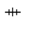
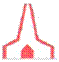
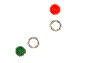

Навигация
1
Шквал это:
Неожиданное кратковременное усиление ветра
Малый вихрь
Уменьшение силы ветра
Ураганный ветер
2
Местные признаки погоды:
Оказывают существенное значение
Не оказывают значение
Нет необходимости следить
Способ прогнозирования погоды без приборов
3
Рельеф дна и очертания берега:
Не оказывают влияния на статическую и динамическую характеристику течения
Оказывают влияние на течение
Оказывают влияние только на статическую характеристику течения
Влияют на скорость приливов и отливов
4
При плавании в прибрежных водах данные местоположения проверяются посредством:
Только визуального определения
Визуального и РЛС определения
РЛС и эхолотного определения
Хронометром
5
При наблюдении одного ориентира, место судна может быть определено:
Только по Крюиз-пеленгу
Только по пеленгу и вертикальному углу
По двум горизонтальным углам
По пеленгу и вертикальному углу или по Крюйз пеленгу
6
На навигационной карте в Меркаторской проекции локсодромия изображается как:
Прямая линия
Часть окружности
Часть гиперболы
S-образная линия
7
На элементы волнения влияние оказывают:
Направление, скорость, продолжительность действия ветра и разгона
Только действие ветра
Только направление ветра
Только рельеф шельфа
8
Навигационный ориентир на м. Галата это:
Большой ресторан „Галата”
Маяк с проблесковыми огнями
Металлическая опора – ферменая конструкция
Крест на местной церкви
9
Аладжа банка находится в районе:
Перед м. Галата
Перед КК „Албена”
Перед КК „Золотые пески”
На юге от Созополя
10
Плавающий знак на Аладжа банка ограждает навигационную опасность с:
Запада
Востока
Севера
Юга
11
Береговая линия от м. Екрене до КК „Албена”какая:
Каменистая
С илом, раковинами и мидиями
С песчаными пляжами
Сильно изрезана
12
Маяк Екрэне находится:
На юге от м. Черный мыс
На севере от КК „Золотые пески”
На юге от устья р. Камчия
На Змеином острове
13
Мыс Светой Атанас находится:
на юге от р. Камчия
На севере от м. Черный мыс
На севере от м. Калиакра
На о-в Светой Иван
14
Мыс Калиакра какой:
Высокий и скалистый, почва и скалы красного цвета
Низкий и песчаный, почва белая
Высокий, гористый, преобладает зеленый цвет
Низкий, сильно выступающим в море гористым мысом
15
Мыс Эмине какой:
Высокий, крутой берег, пласты земли наклонены, почва белая
Высокий, скалистый, почва и скалы красные
Высокий, гористый, преобладает зеленый цвет
Низкий, округлый, переходящий в пляж
16
Очертания какого мыса: N
м. Калиакра
м. Шабла
м. Эмине
Сиври бурун
17
Очертания какого мыса: N
м. Экрене
м. Добра надежда
м. Галата
м. Эмине
18
Очертания какого мыса: N
м. Калиакра
м. Эмине
м. Галата
м. Хорн
19
Линии соединяющие точки с одной и той же глубиной на морской карте называются:
Изолинии
Изогоны
Изобаты
Изобары
20
Магнитная аномалия по Болгарскому черноморскому побережью имеется в районе:
м. Калиакра
Варненского залива
Бургаского залива
Масленого мыса
21
Основной причиной появления ветра является:
Разница атмосферного давления между различными точками земного шара
Различная степень облачности в районе
Круглосуточное вращение земли
Теплые и холодные морские течения
22
Направление ветра означает:
Направление, в которое движется ветер (выходит от компаса)
Север, восток, запад, юг
Направление, от куда он пришел (входит в компас)
Любое направление различное от курса судна
23
При определении направления ветра отчет ведется по:
Круговой системе
Румбовой системе
Полукруговой системе
Часовой стрелке
24
По шкале Бофорта, сила ветра оценивается в:
баллах: от 0 до 9 баллов
Градусах: по отношению мировых направлений
Баллах: от 0 до 12 бала или м/сек
в кг/см²
25
Сила ветра измеряется с помощью:
Анемометра
Психрометра
Барометра
Динамометра
26
При движении судна значения для измерения силы и направления ветра берутся от:
Относительного ветра
Истинного ветра
Судового ветра
Ни один из избранных ответов
27
Фордевинд называется ветром, идущий к судну:
От кормы
От траверса
От носа
От севера
28
Ветер, который дует в кормовую часть судна с левого или правого борта называется:
Левентик
Бакштаг
Бейдевинд
Ветер в корму
29
Суточный или недельный прогноз температуры воздуха регистрируется с помощью:
Термографа
Гидрографа
Барографа
Термометр
30
Атмосферное давление измеряется с помощью:
Анемометра
Аспирационного психрометра
Барометра-анероида
Барокамеры
31
Влажность воздуха измеряется с помощью:
Анемометра
Аспирационного психрометра
Барометра-анероида
Ртутного термометра
32
При падении атмосферного давления можно прогнозировать:
Улучшение погоды
Устойчивую и продолжительную хорошую погоду
Ухудшение погоды
Безветрие
33
При продолжительном высоком давлении, можно прогнозировать:
Улучшение погоды
Устойчивую и продолжительную хорошую погоду
Ухудшение погоды
Повышение ночной температуры
34
В районе Болгарского черноморского побережья днем БРИЗ имеет направление:
От моря к берегу
От берега к морю
От запада к востоку
Параллельно к побережью в направлении с севера на юг
35
Нарушение суточного ритма бриза - это признак:
Улучшение погоды
Устойчивой и продолжительной хорошей погоды
Ухудшение погоды
Предстоящих осадков
36
На закате солнца, когда ветер усиливается и вращается по часовой стрелке можно ожидать:
Спадение и затихание ветра
Шторм
Устойчивую и хорошую погоду
Цунами
37
Когда температура воздуха в ночное время выше, чем в течении дня можно ожидать, что:
Улучшение погоды
Устойчивую и продолжительную хорошую погоду
Ухудшение погоды
Приближение зимы
38
Когда днем уменьшается влажность воздуха, а в вечернее время увеличивается это является признаком:
Устойчивой и хорошей погоды
Ухудшения погоды
Шторм
Туман
39
Пурпурное небо при восходе солнца является признаком:
Плохой погоды - ветер, дождь
Хорошей и устойчивой погоды
Улучшения погоды
Повышения влажности воздуха
40
Если вокруг солнца или луны есть ореол ХАЛО (большой круг), это может быть признаком:
Плохой погоды - ветер, дождь
Хорошей и устойчивой погоды
Туман
Большими приливами и отливами
41
Когда Луна всходит красная, ожидается:
Ветер
Туман
Хорошая погода
Зыбь
42
Когда чайки садятся на поверхность моря ожидается:
Ухудшение погоды
Туман
Хорошая погода
Резкое внезапное похолодание
43
Когда при дожде птицы летят высоко ожидается:
Ухудшение погоды
Улучшение погоды
Шторм
Не ожидается изменения погоды
44
Ветровые волны возникают в следствии:
Разницы температуры воды в различных районах(частях)моря
Передачи энергии ветром на водные частицы морской поверхности
Разницы резких изменений атмосферного давления данного района
Разницы солености воды
45
За направление волнения принимается:
Направление, в которое движется волна
Север, восток, запад, юг
Направление, от которого движется волна
Направление больших волн
46
При отчете направления волнения используется:
Румбовая система
Круговая система
Курс судна (по диаметральной плоскости)
Декартова система координат
47
По шкале Бофорта сила волнения оценивается:
В баллах от 0 до 9 балла
В баллах от 0 до 12 балла
В метрах в секундах
В румбах
48
Под ЗЫБЬЮ(мертвая зыбь) понимают:
Волнение, которое находится непосредственно под воздействием ветра
Волнение, когда встречаются две или более видов волны (стоящие волны)
Волнение, которое уже не находится под воздействием ветра
Тряска судна под воздействием ветра
49
Под ПРИБОЕМ понимают:
Волны близкие к берегу, когда глубина становится меньше и меньше
Разбивающиеся волны об крутые и отвесные берега
Волнение, которое создается от ветра, дующего в данный момент на данное место
Звук издаваемый при разбивании волны о берег
50
БУРУНЫ это:
Морские волны, разрушающиеся на некотором удалении от берега, образуются над подводными валами, рифами, отмелями
Волнение, которое уже не находится под воздействием ветра
Волны у берега, где глубина постоянно уменьшается
Бурун — это турецкое слово и означает камень в географическом смысле
51
Под МОРСКИМ ТЕЧЕНИЕМ понимают:
Горизонтальное движение воздушных масс
Перемещение масс воды в морях и океанах
Охлаждение поверхностного слоя воды
Вертикальное движение водных масс
52
Основные силы, которые влияют на течение:
Периодические приливообразующие силы Луны и Солнца
Продолжительные и преобладающие ветра
Конфигурация берега и рельеф дна
Центробежные силы от движения земли вокруг оси
53
За направление морского течения принимаются:
В северном полушарии направление, в котором движется течение (течение „исходит”от компаса), а в южном полушарии направление, от которого идет
Направление, от которого идет течение („входит” в компас)
Направление, в котором движется течение (течение „исходит”из компаса)
Основные направления: север, восток, запад, юг
54
Скорость течения определяется в:
Метрах за секунду или узлах
Градусах по отношению к курсу судна
Километр в час
Метр в минуту
55
При определении направления течения отчет ведется:
В румбах или градусах от 0° до 360°
В баллах от 0 до 12 баллов или м/сек.
По полукруговой системе
По четвертной системе
56
Под ДРЕЙФОМ понимают:
Движение судна после нажатия на „стоп”до полной остановки его движения
Перемещение судна относительно воды под воздействием ветра и течения
Способ постановки плавающего якоря на встречу ветра и волне
Движение судна с приспустившим якорем на малом ходу
57
При плавании в близи берега в условиях тумана рекомендуется:
Приспустить якорную цепь (длиной равной 3-х кратной осадке судна)
Убрать балласт из танковых цистерн и уменьшить максимальную осадку судна
Идти на ровном киле (Тн=Тк )
Уменьшить скорость
58
При плавании в условиях тумана обязательно:
Периодически проверяются на водонепроницаемость двери и иллюминаторы
Устанавливаются дополнительные леера/стропы
Поддерживается постоянная готовность изменить ход главного двигателя
Готовятся спасательные шлюпки на судне
59
Во время скоростных испытаний курс судна поддерживается:
По магнитному компасу
По жирокомпасу
По линии равной расстоянию 2-х береговых ориентиров
По автопилоту
60
Хронометр работает по:
Гринвичскому времени
Судовому времени
Поясное время
Центральное европейское время
61
Ставро банка находится в районе:
Южнее от пристани Царево
Юго-восточно от мыса Поморие
Восточнее от пристани Каварна
На юг от мыса Калиакра
62
Секторный маяк на Болгарском черноморском побережье находится на:
Острове Св. Иван
Мысе Св. Атанас
Острове Св. Анастасия
Мысе Калиакра
63
Сообщения для закрытых или опасных районов плавания или опасных плавающих предметов по Болгарскому черноморскому побережью передается:
Через лоцманскую службу на 14 канале
Через Навигационные извещения для мореплавателей /НАВИМ/ на 26 канале.
Через Варна-контроль на 16 канал.
Через Варна Радио
64
Прогноз погоды и состояние моря по УКВ связи извещается на:
Канале 26
Канале 16
Канале 70
Канале 66
65
Прогноз погоды и состояние моря по УКВ связи извещается по времени:
На восходе и заходе солнца
В 07.33, 13.33 и 19.33 часа местного времени (болгарское) время -LT
В 07.33, 13.33 и 19.33 часа - стандартного времени - UTC.
В 06.00 и 12.00 часа местного времени.
66
Морское течение, в близи Болгарского черноморского побережья имеет
Направление от юга к северу
Направление от севера к югу
Направление от запада к востоку
Переменное направление
67
Глубина на морской навигационной карте № 201 Болгарского черноморского побережья наносится в:
Саженях
Метрах
Футах и дюймах
Футах
68
Прибор, который служит для измерения глубины называется:
Лаг
Лот
Радиолокационный транспондер
Анемометр
69
Для быстрого и точного измерения глубины независимо от скорости судна используется:
Гидродинамический лаг
Эхолот
Лот
Устройство геотегирования
70
С помощью ручного лота глубина измеряется до:
10 метров при скорости до 7 уз.
20 метров при скорости до 5 уз.
50 метров при скорости до 3 уз.
1 кабельтов при скорости 0 уз.
71
Лотлинь маркируется:
Каждый метр флагштоком с различным цветом
Каждый метр кожаными бирками различной формы
Каждый метр марками и бензилом
Каждый фут последовательно красится в белый и красный цвет
72
С помощью ручного лота можно определить:
Характер грунта
Плотность воды
Температура воды
Скорость воды
73
Эхолот измеряет глубину от:
От дна до ватерлинии
От дна до киля судна
От главной палубы до киля судна
От дна до мостика
74
Лотлинь имеет длину:
52 метра
12 метра
22 метра
1 кабельтов
75
При планировании рейса на навигационной карте наносят:
Только компасные направления
Только истинные направления
Только магнитные направления
Географические координаты, в которых планируются вахтенные смены
76
На звездном глобусе нанесены:
Луна, Солнце, планеты
Всевозможные светила
Только очень яркие звезды
Планеты и очень близкие звезды
77
Истинным восходом Солнца называется тот момент, когда:
Нижний край Солнца над горизонтом
Нижний край Солнца на расстоянии 2/3 от вертикального его диаметра над горизонтом
Верхний край Солнца касается горизонта
Диаметр Солнца на горизонте
78
Видим восход Солнца когда:
Нижний край Солнца на горизонте
Верхний край Солнца касается горизонта
Нижний край Солнца на расстоянии 2/3 от вертикального его диаметра над горизонтом
Диаметр Солнца на горизонте
79
В какой цвет должны быть окрашены щиты бортовых огней:
Темно-черный
Зеленый и красный цвет
Матово- черный
Белый
80
При каких условиях судну требуется двигаться с безопасной скоростью
Только в ограниченной видимости
Только ночью
В любое время
При расхождении судов
81
По полукруговой системе отсчета мировых направлений, плоскость наблюдателя разделена:
от 0° до 180°
от 0° до 360°
от 0° до 90°
от - 90° до + 90°
82
По четвертной системе отсчета мировых направлений, плоскость наблюдателя разделена:
от 0° до 180°
от 0° до 360°
от 0° до 90°
от -180° до + 180°
83
По румбовой системе отсчета мировых направлений, плоскость наблюдателя разделена:
от 0° до 360°
на 32 радиана
на 32 части
от - 90° до + 90°
84
Один румб равен:
11° ¼
185 метра
1/360 от градуса
1/36 от круга
85
Истинный курс (ИК) это угол заключенный между:
Северной частью меридиана и направлением движения судна
Северной частью меридиана и направлением берегового предмета / ориентира
Диаметральной плоскостью судна и направлением данного предмета/ориентира
Направлением движения судна и восточной частью параллели
86
Истинный пеленг (ИП) называется:
Угол, заключенный между северной частью меридиана и направлением движения судна
Угол, заключенный между северной частью меридиана и направлением на данный предмет
Угол, заключенный между диаметральной плоскостью судна и направлением на предмет
Угол, заключенный между восточной частью параллели и направлением на данный предмет
87
Истинный пеленг (ИП) называется:
Угол, заключенный между северной частью меридиана и направлением движения судна
Угол, заключенный между северной частью меридиана и направлением на данный предмет
Угол, заключенный между диаметральной плоскостью судна и направлением на предмет
Угол, заключенный между восточной частью параллели и направлением на данный предмет
88
Этот угол называется:
ИК (истинный курс)
ИП (истинный пеленг)
КУ (курсовой угол)
МП (магнитный пеленг)
89
Курсовой угол (КУ) называется:
Угол, заключенный между северной частью меридиана и направлением на данный предмет
Угол, заключенный, между диаметральной плоскостью судна и направлением на предмет
Угол, заключенный между северной частью меридиана и магнитным полюсом
Разница между двумя пеленгами
90
Истинный курс (ИК) измеряется в градусах от:
от 0° до 90° на север или на юг
от 0° до 180° левого или правого борта
от - 180° до + 180°
от 0° до 360°
91
Этот угол называется: Nи
ИК (истинный курс)
ИП (истинный пеленг)
КУ (курсовой угол)
КП (компасный пеленг)
92
На путевой морской карте наносятся/снимаются значения:
Истинного курса
Магнитного курса
Компасного курса
Ни один из перечисленных
93
Курсовой угол измеряется:
от 0° до 180° с левого или с правого борта
от 0° до 360°
от 0° до 90° с левого или правого борта
от 0° до 90° перед и после траверза
94
Этот угол называется:
КУ правого борта
КУ левого борта
ИП правого борта
МП (магнитный пеленг) правого борта
95
Курс и пеленг наносятся на морскую карту с помощью:
Двубодов циркуль
Навигационного треугольника или транспортира
Протрактора
Ватерлинии
96
Этот угол называется: Nи
ИП
ИК
КУ (курсовой угол)
ОКП
97
Истинный пеленг (ИП) равен:
ИП = ИК + КУ п/б или ИП = ИК - КУ л/б
ИП = КП - К
ИП = КК + КУ п/б или ИП = КК - КУ л/б
ИП = ОКП ± КЪ
98
Судовой магнитный компас служит для:
Определения пройденного расстояния и скорости судна
Определения глубины
Определения курса судна и измерения пеленга
Определения поправки гирокомпаса
99
Основной навигационный прибор на судне (обязательный для всех судов) это:
а/ радиолокационная станция
б/ магнитный компас
в/ лот и эхолот
г/ Указатель скорости на повороте
100
Самыe точные показания для курса судна берутся из:
а/ Главного магнитного компаса
б/ Путевого магнитного компаса
в/ Лодочного магнитного компаса
г/ Судового журнала
101
Стрелка на магнитном компасе устанавливается в направлении:
определенно от направления движения судна
Север-юг
Восток-запад
По диаметральной плоскости судна
102
Основная часть магнитного компаса это:
Нактоуз
Пеленгатор
Чувствительный элемент
Мягкое железо
103
Котелок на морском магнитном компасе подвешен к ноктоузу с помощью:
Девиационного прибора
Карданного кольца
Оптического пеленгатора
Скобы из не намагничивающего материала
104
Девиационный прибор магнитного компаса на судне служит для:
Уничтожения магнитного склонения
Определения общей поправки компаса
Уничтожения магнитного поля суднa
Уничтожения внешних магнитных сил
105
Поддерживающая жидкость (компасная жидкость) для картушки в судовом магнитном компасе это:
Дистиллированная вода
Водный раствор этилового спирта
Антифриз и дистиллированная вода
Глицерин
106
Географический полюс и магнитный полюс:
Совпадают
Одно и тоже понятие
В северном полушарии совпадают, а в южном не совпадают
Не совпадают
107
Магнитным склонением (d) называется:
Угловое отклонение магнитной стрелки в результате магнитного поля Земли
Угловое отклонение магнитной стрелки в результате судового магнитного поля
Показания девиационного прибора от судового магнитного компаса
Расстояние между географическим полюсом и соответственным магнитным полюсом
108
Магнитное склонение берется по знаку и величине:
На карте района плавания
В таблице для девиации судна
На судовом магнитном компасе
В судовом удостоверении
109
Линии, соединяющие точки с одним и тем же значением магнитного склонения называются:
Изолинии
Изобаты
Изогоны
Изобары
110
Девиация (δ)на судовом магнитном компасе называется:
Угловое отклонение магнитной стрелки в результате земного магнитного поля
Угловое отклонение магнитной стрелки в результате судового магнитного поля
Угловое отклонение магнитной стрелки от истинного меридиана в компасный меридиан
Ошибка в результате не точного измерения в следствии вибрации судна
111
Диск розы на судовом магнитном компасе разделен на градусы для отчета мировых направлений:
По круговой системе
По румбовой системе
По четвертной системе
По экваториальной системе
112
Девиация на судовом магнитном компасе берется по знаку и величине из:
Карты заданного района плавания
Судового журнала
Технического паспорта магнитного компаса
Таблицы девиации
113
Девиация на магнитном компасе изменяется при:
Изменении района плавания
Изменении курса судна
Изменении круглосуточного ветра на земле
Изменении температуры воды
114
Девиация магнитного компаса судна рассчитывается:
Ежегодно
При испытании судна после постройки
Ежедневно
Перед выходом судна в рейс
115
Общая поправка на судовой магнитный компас ( ΔΚ ) равна:
ΔК = δ - d
ΔК = d - δ
ΔК = (± d ) + ( ± δ )
Δ К = (d + δ)/2
116
Общая поправка на судовой магнитный компас определяется:
Разницей между истинным курсом и истинным пеленгом
Разницей между девиацией и магнитным склонением
Среднеарифметическим соотношением к алгебраическому от девиации и магнитного склонения
Алгебраической суммой девиации и магнитного склонения
117
Судовой магнитный компас дает показания для:
Компасного курса
Магнитного курса
Истинного курса
Для угла между курсом судна и экватором
118
При измерении пеленгов по береговым ориентирам, показания магнитного компаса определяются как:
Относительные пеленги
Истинные пеленги
Магнитные пеленги
Компасные пеленги
119
Истинный курс( ИК) равен:
ИК = КК + ( ± Δ Κ )
ИК = КК – ( ± ΔΚ )
ИК = КУ + Δ Κ
ИК = КУ ± ΔК
120
Этот угол называется:
Компасный курс
Магнитный курс
Истинный курс
Судовой курс
121
Этот угол называется:
Компасный курс
Магнитный курс
Истинный курс
Магнитное склонение
122
Этот угол называется:
Компасный курс
Магнитный курс
Магнитное склонение
Истинный курс
123
Этот угол называется:
Магнитное склонение
Общая поправка на компас ΔК
Девиация на магнитный компас
Истинный курс
124
Этот угол называется:
Общая поправка на магнитный компас
Девиация на магнитный компас
Магнитное склонение
Магнитный курс
125
Этот угол называется:
Истинный курсовой угол
Курсовой угол правого борта
Истинный курс
Истинный пеленг
126
Этот угол называется:
Компасный пеленг
Компасный курсовой пеленг
Курсовой угол левого борта
Курсовой угол правого борта
127
Сумма этих двух углов равна:
Истинный пеленг
Курсовой угол правого борта
Истинный курсовой угол
Истинный курс
128
Этот угол называется:
Курсовой угол правого борта
Истинный курсовой угол
Компасный пеленг
Обратный компасный пеленг
129
Этот угол называется:
Обратный компасный пеленг
Компасный пеленг
Курсовой угол левого борта
Курсовой угол правого борта
130
Этот угол называется:
Обратный компасный пеленг
Кормовой курсовой угол
Обратный компасный курс
Курсовой угол левого борта
131
Истинный пеленг (ИП) равен:
ИП = КУ - ΔΚ
ИП = ИК - Δ Κ
ИП = КП + ( ± Δ Κ )
ИП = ОКП ± Δ К
132
Компасный курс равен (КК):
КК = МК+ ( ± δ )
КК = ИК - d
КК = ИК + d
КК = КУ + КП
133
По этой формуле определяется:
Дальность видимости горизонта
Дальность видимости береговых знаков
Рефракция видимости горизонта
Дальность распространения УКВ радиоволн
134
Дальность видимости огней на морских картах:
Рассчитана для высоты глаза наблюдателя 2 метра
Рассчитана на высоте уровня моря
Рассчитана для высоты глаза наблюдателя 5 метров
Рассчитана для высоты глаза наблюдателя 24 фута
135
Дальность видимости по этой формуле рассчитывается в:
В метрах
Километрах
Морских милях
Кабельтовых
136
Дальность видимости берегового знака (ориентира) равна:
137
Основная единица измерения расстояния в море:
Километр
Метр
Морская миля
Кабельтов
138
Морская миля равна:
1852 метра
185 метра
100 метра
1/360 от длины экватора
139
Морская миля равна:
1/10 часть от кабельтов
Одной минуте от меридиана при географической широте 45°
Одной экваториальной минуте (1 минута от географической долготы)
1/90 части расстояния от экватора до северного полюса
140
Один кабельтов равен:
1852 метра
285 метра
185 метра
100 ярда
141
Кабельтов- единица для измерения:
Расстояние
Глубина
Высота
Углов изогнутых поверхностей
142
Сажень единица измерения:
Расстояния
Высоты
Глубины
Скорости подводного течения
143
Один фут равен:
0,3048 метра
0,914 метра
0,254 метра
10 дюймов
144
Один сажень равен:
0,3048 метра
5,029 метра
1,828 метра
12 фута
145
Одна миля на морской карте равна:
1 минуте географической широты
1 минуте географической долготы
Масштабной карте, с уменьшением до 1000 единиц
12 кабельтов
146
Единицы измерения нанесенных высот и глубин на морской карте:
Указаны за каждой цифрой
Указаны в извещениях для мореплавателей
Указаны в заглавии карты
Указаны над изобатами
147
Скорость судна измеряется в:
Км/ час
Узлах
Метр в секунду
Кабельтов в час
148
Расстояние между двумя точками на морской карте измеряется и переносится на:
Горизонтальную рамку карты
Масштаб карты
Вертикальную рамку карты
Миллиметровую линию
149
Скорость судна измеряется прибором, который называется:
Лот
Эхолот
лаг
Спидометр
150
Прибор для измерения пройденного расстояния называется:
Эхолот
Лотлинь
лаг
Спидометр
151
Один узел равен:
Пройденной одной миле за час
Пройденному одному километру за час
Пройденный один метр за секунду
Пройденному одному кабельтов за час
152
При скорости судна равной 7 узлам судно за 2 часа пройдет:
14 морских миль
7 морских миль
14 километра
14 кабельтов
153
При плавании в близи берега путь судна наносится на:
Путевой карте
Плановой
Генеральной карте
Миллиметровой бумаге
154
При масштабе на карте М 1:150 000 означает что:
1 см на карте соответствует 15 км на местности
1 см на карте соответствует 1,5 км на местности
1 см на карте соответствует 15 милям на местности
1 см на карте соответствует 150 метрам на местности
155
Меркаторская проекция является:
Цилиндрической
Конической
Азимутной
Сферической
156
Кротчайшим расстоянием между двумя точками на земном шаре является дуга большого круга, которая называется:
Локсодромия
Истинный пеленг
Дуга равная окружности
Ортодромия
157
Локсодромия это спиралевидная кривая, которая пересекает все меридианы:
Под одним и тем же углом
Под различным углом
Под правым углом
Под очень острым углом
158
Основные карты, которые используются в судовождении в:
Конической проекция
Азимутальной проекция
Меркаторской проекции
Физической карте
159
При определении места судна с двумя и более пеленгами, действия выполняются в следующей последовательности:
Первым пеленгуется тот объект, который находится по траверсу судна
Первым пеленгуется тот объект, который находится к носу или корме судна
Нет значения в последовательности
От самого дальнего ориентира к самому близкому
160
Способ „крюйз-пеленг” для определения место судна применяется:
Когда плохая видимость
При более трех береговых ориентиров
Когда есть только один береговой ориентир
При потере берегового ориентира
161
Определение места судна по „крюйз-пеленг” осуществляется:
Разновременным пеленгованием 1 объекта и вычислением/отчитыванием пройденного расстояния между двумя пеленгами
Пеленгованием 1 объекта и взятием расстояния до него в момент видимости горизонта
Пеленгованием навигационного ориентира и снятием его в вертикальном углу
Измерением расстояния до ориентира и взятием высоты ориентира из карты
162
При определении места судна по 3-м пеленгам очень часто место находится:
В треугольнике полученного от пересечения трех пеленгов
В точке пересечения 2-х пеленгов к объекту находящийся очень близко по траверсу судна
На расстоянии 1 мили в направлении обратного курса судна
В квадрате
163
Прокладкой называют:
Графическое отображение прохождения судном пути на навигационной карте
Способ для определения место судна по пеленгу и расстоянию
Определение место судна на карте
Расчет пройденного расстояния за один час
164
Согласно морской практики безопасное расстояние для расхождения судов это:
Минимум 10 кабельтов
Минимум 12 кабельтов
Минимум 20 кабельтов
Не меньше 3-х морских миль
165
Что представляет Racon:
Радиомаяк
Пассивный радиолокационный отражатель
Активный радиолокационный отражатель
Навигационная система военноморских сил в СЩА
166
Когда судно будет двигаться на север, а магнитный компас покажет юг:
На Экваторе
Между географических и магнитных полюсов
Около тропиков
От южного полюса к южной полярной окружности
167
Парусное судно идет:
Левым Бейдевиндом
Левым Галфвиндом
В Фордевинде
Правым галсом
168
Парусное судно идет:
Левым галсом
Правым Галфвиндом
Правым Бейдевиндом
Бакштагом
169
Международные правила по предупреждению столкновения судов обязательны для:
Для всех судов
Для всех судов за исключением военных кораблей
Для всех морских районов за исключением побережных районов
Для больших судов
170
Знак нанесенный на морской карте означает:
Сухой док
Шлюзовая преграда
Буна
Мол
171
Знак нанесенный на морскую карту означает:
Направление и скорость движения судна
Направление и скорость ветра в узлах
Глубина над известным подводным объектом
Направление и скорость приливного течения, как обозначение
172
Знак нанесенный на морскую карту означает:
Глубина над неизвестным подводным объектом
Глубина не подтверждается
Глубина над известным подводным объектом
Приблизительная глубина
173
Знак нанесенный на морскую карту означает:
Водоросли
Направление движения переменного течения
Зоопланктон
Обычный путь передвижения рыбы
174
Знак нанесенный на морскую карту означают:
Скалистые острова
Закрытая зона для навигации
Скалы, показывающиеся над поверхностью воды с указанием высоты
Подводные скалы с указанием их высоты
175
Знак нанесенный на морскую карту означает:
Место расположения судна — мишень
Затонувшее судно под водой
Судовая мишень
Затонувшее судно, его корпус виден над водой
176
Знак нанесенный на морскую карту означает:
Останки от затопленного судна, мачта которого показывается над водой
Искусственный навигационный ориентир
Затонувшее под водой судно
Мачта, на которой установлена УКВ антенна
177
Знак нанесенный на морскую карту означает:

УКВ радио антенна
Искусственный навигационный ориентир
Останки от затонувшего судна, которые не опасны для судовождения под поверхностью
Затонувшее судно, его корпус виден над водой
178
Знак нанесенный на морской карте означает:

Препятствие с наименьшей над ним глубиной, как указано
Отдельно изолированная глубина
Отдельное мелководье с приблизительно измеренной глубиной
Препятствие для судоходства, с установленной высотой над водой
179
Знак нанесенный на морской карте означает:
Опасные останки от затонувшего судна, глубина не известна
УКВ радио антенна с приблизительно нанесенным местом
Отдельное мелководье с приблизительно нанесенным местом
Затонувшее судно, его корпус виден над водой
180
Знак нанесенный на морской карте означает:
Опасные останки от затонувшего судна, глубина не известна
Останки от затопленного судна, которые не опасны для судоходства по поверхности
Затонувшее судно, его корпус виден над водой
Затонувшее под водой судно
181
Знак нанесенный на морской карте означает:
Буй для заграждения опасности
Платформа с наименованием/обозначением
Маяк горит красным светом
Буй для безопасности на воде
182
Знак нанесенный на морской карте означает:
Обязательное круговое движение около платформы
Район закрыт для промысла
Зона безопасности около отдаленного от берега сооружения
Швартовный буй
183
Какую форму имеет земля?
Шар
Геоид
Сфероид
Сплющенная сфера
184
Радиус земного шара равен на:
6371 км
6731 км
7631 км
около 10 000 км
185
Основные точки и круги земного шара:
север, восток, запад, юг
северный полюс, южный полюс, экватор, параллели и меридианы
географическая ширина и долгота
экватор и гринвичский меридиан и пресеченные ими точки
186
Суточное вращение земли это:
От запада на восток
С востока на запад
Около солнца
Вокруг оси
187
Человек, находящийся на северном полюсе будет наблюдать суточное вращение земли:
Не будет вращаться
По часовой стрелки
Против часовой стрелки
Колебания около Полярной звезды
188
Основой для определения географических координат служит:
Направление: север, юг, запад, восток
Направление магнитной стрелки с севера на юг
Площадь экватора и Гринвичский меридиан
Тропик Рака и тропик Козерога
189
Экватор разделяет земной шар на:
западную и восточную часть
северную и восточную часть
северное и южное полушарие
на две полусферы
190
Главный меридиан разделяет земной шар на:
западную и восточную часть
северную и восточную часть
северное и южное полушарие
часовые пояса
191
Направление вверх, определено свободной отвесной линией в точке земного шара, которая называется:
зенит
надир
полюс
небесный полюс
192
Географическая широта φ (фи) измеряется:
от 0° до 90° по отношению к экватору полюсов
от 0° до 180° по отношению к экватору полюсов
от 0° главного меридиана до 180° на восток или на запад
от – 90° до + 90°
193
Географическая долгота λ (лямбда) измеряется:
от 0° главного меридиана до 180° на север или юг
от 0° экватора до 90 ° на восток или запад
от 0° главного меридиана на восток или запад до180°
от -180° до + 180°
194
Географическая широта нанесена на морской карте на:
Горизонтальной рамке
Вертикальной рамке
В заглавии карты
На меридианах нанесенных на карте
195
Географическая долгота нанесена на морской карте на:
Горизонтальной рамке
Вертикальной рамке
В заглавии карты
На параллелях нанесенных на карте
196
Точка координат φ = 43°16',7 N и λ=028º05',4 Е находится:
В северном полушарии, западной части
В южном полушарии, восточной части
В северном полушарии, восточной части
На востоке от Гринвичского меридиана и на юге от экватора
197
Точка координат φ = 67°58'¸5 S и λ = 178°05',8 W находится:
В западном полушарии, северной части
В южном полушарии, восточной части
В южном полушарии, западной части
На востоке от Гринвичского меридиана и на юге от экватора
198
Плоскость, перпендикулярная плоскости истинного меридиана, определяет направление:
Север-юг
Восток-запад
Север-восток
К полюсам
199
Плоскость истинного меридиана определяет направление:
Восток-запад
Север-восток, запад, юг
Север-юг
К точке наблюдателя
200
В какой точке земного шара, будет только направление - ЮГ:
На южном полюсе
В точке пересечения экватора и гл.меридиана
На северном полюсе
В любой точке южного полярного круга
201
По круговой системе отсчета мировых направлений, плоскость наблюдателя разделена:
от 0° до 180 °
от 0° до 90°
от 0° до 360°
от -180° до + 180°
202
По круговой системе отсчета мировых направлений, отчитывается:
От севера на запад (обратно на часовой стрелки)
От севера на восток (по часовой стрелки)
От севера на восток или запад от 0° до 180°
От севера без значения в каком направлении по часовой стрелки
203
Виды прокладки:
Дневная и ночная
Морская и речная
Предварительная и действующая
Масштабная карта, где масштаб отличается от масштаба карты
204
Инструменты необходимые для выполнения прокладки:
Лотлинь, психрометр, анемометр
Транспортир, параллельная линейка, циркуль, карандаш
Барограф, термограф, анероид, гидрограф
Карандаш, линейка и циркуль
205
Лоция как раздел судовождения, которая рассматривает:
Способы определения места судна
Описание данного района и рекомендации по безопасности мореплавания
Правильно загрузить и сохранить груз на борту судна
Управление парусного судна
206
Основной береговой навигационный ориентир обозначен на морской карте это:
Маяк
Радиомаяк
Буй
Береговая радиолокационная станция
207
Плавающие средства для навигационных ограждений:
Течение, волнение, лед
Маяк, огонь, навигационный знак, створ, столб
Веха, бакан, буй
Плавающие буровые установки
208
Морской буй это:
Дневной и ночной навигационный плавающий ориентир
Только дневной навигационный ориентир
Ведущий береговой навигационный ориентир
Навигационный ориентир оборудованный устройством для подачи сигнала в тумане
209
По системе МАМС Регион „А” для ограждения сторон фарватеров, каналов и проходов используются:
Латеральные знаки
Кардинальные знаки
Специальные знаки
Знаки окрашенные в черный и белый
210
Для ограждения навигационных опасностей - банки, рифы, скалы и отмель используют:
Латеральные знаки
Кардинальные знаки
Специальные знаки
Разноцветные знаки
211
В условиях плохой видимости судну требуется идти с:
Безопасной скоростью
Минимальной скоростью
Экономичной скоростью
Замедленной скоростью
212
В условиях плохой видимости при наличии опасности столкновения-
Судно имеет приоритет
Судно не имеет приоритета
Приоритет по взаимной договоренности
Приоритет имеет большое судно
213
Знак нанесенный на морскую карту означает:
Рекомендуемый фарватер
Траектория на переменное морское течение
Фарватер, на котором разрешено становится на якорь
Подводный кабель
214
Знак нанесенный на морскую карту означает:
Линия обозначающая подводный кабель
Фарватер, на котором разрешено становится на якорь
Подводный трубопровод для нефти / газа
Подводные скважины для добычи нефти/ газа
215
Знак нанесенный на морскую карту означает:
Ведущии/створные знаки
Направление положения подводного трубопровода
Направление положения подводного кабеля
Направление по которому требуется избегать движения
216
Знак нанесенный на морскую карту означает:
Рекомендован путь с максимально допустимой воздушной осадкой, обозначенной на нем
Рекомендован путь с максимально допустимой осадкой, обозначенной на нем
Направление положения подводного трубопровода с глубиной над ним
Направление по которому требуется избегать движения на продолжении 7 миль
217
Знак нанесенный на морскую карту означает:
Точка, в которой следует докладывать по радио
Точка, в которой даны данные течения района
Точка, в которой навигация осуществляется только в указанном направлении
Точка, в которой требуется сменить частоту, для общения с берегом
218
Знак нанесенный на морскую карту означает:
Запрещено становится на якорь
Безопасное место, где можно приспустить якорь
Место, при прохождении которого якорь должен быть готов для отдачи
Место постановки на якорь
219
Знак нанесенный на морскую карту означает:
Якорная стоянка
Место запрещено для постановки на якорь
Район запрещен для постановки на якорь
Якорная стоянка для судов перевозивших опасные грузы
220
Знак нанесенный на морскую карту означает:
Обычный путь движения рыбных ресурсов
Граница рыболовной зоны
Зона, по которой могут ходить только рыболовные суда
Зона, запрещенная для перемещения всех судов
221
Знак нанесенный на морскую карту означает:
Береговая линия с пляжной полосой
Береговая линия с пустыней
Береговая линия, которая была исследована
Береговая линия, которая не исследована
222
Знак нанесенный на морскую карту означает:
Береговая линия с пустыней
Береговая линия с пляжной полосой
Береговая линия, которая не исследована
Приблизительно нанесенная береговая линия
223
Знак нанесенный на морскую карту означает:
Берег лесной в побережной зоне
Берег с дюнами около берега
Береговая линия, которая не исследована
Отвесный скалистый берег
224
Знак нанесенный на морскую карту означает:
Берег с дюнами около берега
Приблизительно нанесенная береговая линия
Береговая линия, которая не исследована
Песчаный берег
225
Знак нанесенный на морскую карту означает:
Нанесены точки
Приблизительная величина нанесенной высоты
Разная высота берега
Приблизительно нанесенное место высоты
226
Знак нанесенный на морскую карту означает:
Подводный трубопровод
Кабельные опоры высокого напряжения с обозначением безопасной высоты для прохода
Место, где плавающий ферибот соединяет два берега
Линия, на которой запрещено становится на якорь
227
Знак нанесенный на морскую карту означает:
Место, где проходят под водой подводный / подводные кабели
Слип, рампа
Линия / линии, на которых запрещено становится на якорь
Место / места от которых исходит фериботная линия
228
Знак нанесенный на морскую карту означает:
Опасность для судовождения, которая над водой
Опасные подводные скалы с неизвестной глубиной над ними
Скалы, которые видно над водой
Место затонувшего неизвестного судна
229
Знак нанесенный на морскую карту означает:
Якорная лоцманская станция, носящая красный огонь
Плавающая УКВ радиовещательная станция
Плавающий буй
Буй с крестовидной топовой фигурой, светящий красным
230
Знак нанесенный на морскую карту означает:

Секторный огонь
Круговой сектор с видимым огнем, который не виден
Круговой видимый огонь с сектором, в котором горит красный цвет
Круговой видимый огонь с сектором, в котором плавание запрещено
231
Знак нанесенный на морскую карту означает:
Круговой видимый огонь в секторе которого не виден
Круговой видимый огонь с сектором, в котором горит красный цвет
Круговой видимый огонь с сектором, в котором плавание запрещено
Круговой видимый огонь с сектором, в котором запрещена постановка на якорь
232
Знак нанесенный на морскую карту означает:
Швартовный буй
Конически буй
Швартовная веха
Цилиндрический буй
233
Знак нанесенный на морскую карту означает:
Швартовный буй
Коническая веха
веха
Швартовная веха
234
Знак нанесенный на морскую карту означает:
Цилиндрическая веха
Швартовный буй
Цилиндрический буй
веха
235
Знак нанесенный на морскую карту означает:
Западный буй частопроблесковый с 3-мя проблесками за 5 сек. или быстропроблесковый 3-мя проблесками за 10 сек.
Северный буй частопроблесковый с 3-мя проблесками за 5 сек. или быстропроблесковый 3-мя проблесками за 10 сек.
Буй обозначающий изолированную опасность
Восточный буй частопроблесковый 3 проблеска за 5 сек. или быстропроблесковый 3 проблеска за 10 сек.
236
Знак нанесенный на морскую карту означает:
Западный буй, очень частопроблесковый с 9-ю проблесками за 10 сек. или быстропроблесковый 9-ю проблесками за 15 сек.
Северный буй, очень частопроблесковый с 9-ю проблесками за 10 сек. или быстропроблесковый 9-ю проблесками за 15 сек.
Восточный буй, очень частопроблесковый с 9-ю проблесками за 10 сек. или быстропроблесковый 9-ю проблесками за 15 сек.
Буй обозначающий безопасные воды
237
Знак нанесенный на морскую карту означает:
Веха обозначающая изолированную опасность
Веха обозначающая безопасные воды
Северная веха, мигающая 2 раза
Веха обозначающая новую опасность, проблескивающая двумя красными проблесками
238
Знак нанесенный на морскую карту означает:
Южный буй, очень частопроблесковый или быстропроблесковый
Буй обозначающий безопасные воды частыми или быстрыми проблесками
Буй обозначающий изолированную опасность
Северный буй, частопроблесковый или быстропроблесковый
239
Знак нанесенный на болгарскую морскую карту означает:
Подводный кабель
Надводные скалы
Подводные скалы
Затонувшее судно
240
Знак нанесенный на болгарскую морскую карту означает:
Веха с размерами
Останки затонувшего судна над водой
Оптический кабель
Навигационный ориентир с данной высотой над водой и высотой ориентира
241
Нанесенное сокращение на болгарской морской карте „ПП” означает:
Постоянно проблесковый огонь
Полузатонувшее судно
Плавание только с лоцманом
Положение приблизительно
242
Нанесенное сокращение на болгарской морской карте „ПС” означает:
Постоянный огонь
Положение сомнительное
Рекомендуемый створный знак
Постоянный створный знак
243
Нанесенное сокращение на болгарской морской карте „Пр” означает:
Проблесковый огонь
Приблизительно
Плавание рекомендуется
Постоянный огонь
244
Нанесенное сокращение на болгарской морской карте „Зтм” означает:
Проблесковый огонь
Затмевающий огонь
Постоянный огонь
Затмевающий огонь работает круглосуточно
245
Нанесенное сокращение на болгарской морской карте „П” означает:
Постоянный огонь
Приблизительно
Плавание рекомендуется
Рекомендовано
246
Нанесенное сокращение на болгарской морской карте „Пр(2)” означает:
Проблесковый огонь
Сложный Группопроблесковый огонь
Группопроблесковый огонь
Постоянный огонь с двумя проблесками
247
Нанесенное сокращение на болгарской морской карте „Т” означает:
Место затонувшего судна
Подводные камни
Песок
Ил
248
Нанесенное сокращение с акваториями на болгарской морской карте „П” означает:
Мелководье
Затонувшее по водой судно
Песок
Подводное препятствие
249
Нанесенное сокращение с акваториями на болгарской морской карте „Р” означает:
Местообитание рапана
Ракушки
Место скопления рыбы
Место скопления раков
250
Нанесенное сокращение с акваториями на болгарской морской карте „тр” означает:
Редкая тина
Подводно препятствие
Место скопления рыбы
Тина и ракушки
251
Нанесенное сокращение "РМ" для навигационных огней на болгарской морской карте означает:
Пассивный радиолокационный отражатель буя
Активный радиолокационный отражатель буя
Секторный радиомаяк
Радиомаяк
252
Нанесенное сокращение на болгарской морской карте означает:
Навигационный знак, огонь проблесковый с 3-мя проблесками за 15 сек., дальность видимости 25 мили, подающий сигнал в тумане — буква "н"
Маяк мигает 15 раз за 3 сек., с дальностью видимости 25 метра
Маяк, с затемнением 3 раза за 15 сек., с дальностью видимости 25 мили и мегафон
Маяк, светящийся постоянно зеленым огнем, дальность видимости 25 мили и подающий сигнал в тумане - буква "н" с мегафоном
253
Нанесенный знак и сокращения на болгарской морской карте означают:
Западный буй, с 3-мя проблесками за 10 сек., огонь зеленый, оборудован сигнализацией ревун
Восточный буй, с частыми проблесками 3 раза за 10 сек., огонь белый, оборудован сигнализацией ревун
Восточный буй, с 3-мя проблесками за 10 сек., огонь зеленый, оборудован сигнализацией ревун
Восточный буй, с частыми проблесками за 10 сек., огонь зеленый, оборудован сигнализацией ревун
254
Показанный флаг означает:
Флаг "А" - Гружу, выгружаю опасный груз
Флаг "Т" -Держитесь в стороне от меня, я произвожу парное траление
Флаг "В" — Я гружу, или выгружаю, или имею на борту опасный груз
Флаг "M" — На борту есть врач
255
Показанный флаг означает:

Флаг "С" - Да, утвердительный
Флаг "Н" — У меня есть на борту лоцман
Флаг "В" — Я гружу, или выгружаю, или имею на борту опасный груз
Флага "U -Вы идете к опасности
256
Показанный флаг означает:

Флаг "А" - Гружу, выгружаю опасный груз
Флаг "С" - Да, утвердительный
Флаг "N" - Нет, отрицательный
Флаг "M" — На борту есть врач
257
Показанный флаг означает:
Флаг "А" - Гружу, выгружаю опасный груз
Флаг "Н" — У меня есть на борту лоцман
Флаг "N" - Нет, отрицательный
Флаг "G" — Мне нужен лоцман
258
Показанный флаг означает:
Флаг "Q" — Мое судно не зараженное, прошу предоставить мне свободную практику
Флаг "Н" — У меня есть на борту лоцман
Флаг "С" - Да, утвердительный
Флаг "V" — Мне необходима помощь
259
Показанный флаг означает:
Флаг "V" — Мне необходима помощь
Флаг "M" — На борту есть врач
Флаг "Q" — Мое судно не зараженное, прошу предоставить мне свободную практику
Флаг "G" — Мне нужен лоцман
260
Показанный флаг означает:
Флаг "С" - Да, утвердительный
Флаг "M" — На борту есть врач
Флаг "В" — Я гружу или выгружаю, или имею на борту опасный груз
Флаг "Q" — Мое судно не зараженное, прошу предоставить мне свободную практику
261
Показанный флаг означает:
Флаг "С" - Да, утвердительный
Флаг "В" — Я гружу, или выгружаю, или имею на борту опасный груз
Флаг "U -Вы идете к опасности
Флаг "О" - Человек за бортом
262
Показанный флаг означает:
Флаг "С" - Да, утвердительный
Флага "U -Вы идете к опасности
Флаг "О" - человек за бортом
Флаг "В" — Я гружу, или выгружаю, или имею на борту опасный груз
263
Показанный флаг означает:
Флаг "В" — Я гружу, или выгружаю, или имею на борту опасный груз
Флаг "U -Вы идете к опасности
Флаг "V" — Мне необходима помощь
Флаг "С" - Да, утвердительный
264
Показанный флаг означает:
Флаг "V" — Мне необходима помощь
Флаг "О" - человек за бортом
Флаг "В" — Я гружу, или выгружаю, или имею на борту опасный груз
Флаг "С" - Да, утвердительный
IALA
265
В районе плавания B, видите зеленую веху. Что она означает?
Знак, разделительного движения
Обойди меня с Запада
Основной фарватер слева
Левая сторона основного фарватера
266
В районе плавания B, видите красный конический буй. Что он означает?
Обойди меня с Севера
Район для военных учений
Правая сторона основного фарватера
Основной фарватер справа
267
В районе плавания B, видите красный столбовидный буй. Что он означает?
Район отдыха и развлечений
Правая сторона основного фарватера
Обойди меня с Юга
Основной фарватер слева
268
В районе плавания B, видите цилиндрический буй. Что он означает?

Знак, разделительного движения
Левая сторона основного фарватера
Обойди меня с Севера
Основной фарватер справа
269
В районе плавания B, видите красный столбовидный буй. Что он означает?
Основной фарватер справа
Обойди меня с Запада
Левая сторона основного фарватера
Район для военных учений
270
В районе плавания B, видите веху. Что она означает?
Левая сторона является основным направлением движения
Основной фарватер справа
Место, где проходят подводные кабели
Обойди меня с Севера
271
В районе плавания B, видите конический буй. Что означает?
Знак принадлежащий системе МАМС, для сбора данных Мирового океана
Обойди меня с Востока
Левая сторона основного фарватера
Основной фарватер слева
272
В районе плавания B, видите столбовидный буй. Что означает?
Границы подводных карьеров
Левая сторона основного фарватера
Основной фарватер слева
Обойди меня с Востока
273
В районе плавания B, видите столбовидный буй. Что означает?
Обойди меня с Востока
Правая сторона является основным направлением движения
Основной фарватер слева
Район отдыха и развлечений
274
Что показывают судоводителям кардинальные знаки?
Где находится якорная стоянка
Где можно обойти навигационную опасность
В каком направлении находится фарватер
Как пересечь зону раздельного движения
275
Где устанавливаются кардинальные знаки?
В направлении к одному из четырех сторон горизонта (Север, Юг, Восток, Запад) от обозначенной точки
С правой стороны от фарватера
В начале зоны разделительного движения
С конца зоны разделительного движения
276
Для чего используются кардинальные знаки?
Показать как пересечь зону разделительного движения
Показать направление от фарватера
Показать безопасную сторону прохода, где можно обойти навигационную опасность
Показать, где находится якорная стоянка
277
Какая форма и число топовых фигур на кардинальных знаках?
Коническая форма с одним топовым
Цилиндрическая форма с одним топовым
Два шара
Два конуса
278
Какой цвет имеют топовые фигуры на кардинальных знаках?
Черный и красный
Всегда черный.
Всегда желтый
Зеленый и красный
279
Видите следующие топовые фигуры. На каком знаке они устанавливаются?
На знаке, ограждающем отдельную опасность
На латеральном
На северном кардинальном
На знаке чистой воды
280
Видите следующие топовые фигуры. На каком знаке они устанавливаются?
img src="img/image090.gif">
На знаке, ограждающем отдельную опасность
На знаке чистой воды
На северном латеральном
На восточном кардинальном
281
Видите следующие топовые фигуры. На каком знаке они устанавливаются?
На латеральном, "фарватер вправо"
На знаке, ограждающем отдельную опасность
На знаке чистой воды
На южном кардинальном
282
Видите следующие топовые фигуры. На каком знаке они устанавливаются?
На латеральном, "фарватер влево"
На западном кардинальном
На знаке, ограждающем отдельную опасность
На знаке чистой воды
283
Какие цвета используются на кардинальных знаках?
Черный и желтый
Черный и красный
Белый и красный
Зеленый и красный
284
Какой цвет имеют огни на кардинальных знаках (если огни)?
Желтый
Зеленый
Белый
Красный
285
Видите следующий знак. Что он означает?

Специальный знак "Здесь проходят подводные кабели"
Знак чистой воды "Здесь судоходные воды"
Латеральный знак, "фарватер вправо"
Северный кардинальный "Обойди меня с Севера"
286
Видите следующий знак. Что он означает?
Специальный знак "Здесь проходят подводные трубопроводы"
Северный кардинальный. "Обойди меня с Севера."
Знак чистой воды "Здесь судоходные воды"
Латеральный знак "Фарватер влево"
287
Видите следующий знак. Что он означает?
Восточный кардинальный "Обойди меня с Востока."
Специальный знак "Это границы подводных карьеров."
Знак чистой воды "Здесь судоходные воды"
Латеральный знак "Фарватер влево"
288
Видите следующий знак. Что он означает?
Специальный знак "Район для отдыха и развлечений"
Южный кардинальный. Обойди меня с Юга."
Латеральный "Фарватер вправо"
Знак чистой воды "Здесь судоходные воды"
289
Видите следующий знак. Что он означает?
Знак чистой воды "Здесь судоходные воды"
Специальный знак "Этот район для военных учений."
Латеральный знак "Фарватер влево"
Восточный кардинальный "Обойди меня с Востока."
290
Видите следующий знак. Что он означает?
Знак чистой воды "Здесь судоходные воды"
Южный кардинальный. Обойди меня с Юга."
Специальный знак "Этот район для военных учений."
Латеральный знак "Фарватер вправо"
291
Видите следующий знак. Что он означает?
Латеральный знак "Фарватер влево"
Знак чистой воды "Здесь судоходные воды"
Западный кардинальный. "Обойди меня с Запада."
Специальный знак "Район для отдыха и развлечений"
292
Видите следующий знак. Что он означает?
Знак чистой воды "Здесь судоходные воды"
Специальный знак "Этот район для военных учений."
Латеральный знак "Фарватер вправо"
Западный кардинальный. "Обойди меня с Запада."
293
Видите следующий знак. Что он означает?
Северный кардинальный. "Обойди меня с Севера."
Латеральный знак "Фарватер вправо"
Латеральный знак "Фарватер влево"
Чистые воды "Здесь судоходные воды"
294
Видите следующий знак. Что он означает?
Знак чистой воды "Здесь судоходные воды"
Латеральный знак "Фарватер вправо"
Латеральный знак "Фарватер влево"
Северный кардинальный. "Обойди меня с Севера."
295
Видите следующий знак. Что он означает?
Специальный знак "Граница подводных карьеров."
Восточный кардинальный "Обойди меня с Востока."
Латеральный знак "Фарватер влево"
Северный кардинальный. "Обойди меня с Севера."
296
Видите следующий знак. Что он означает?
Специальный знак "Здесь проходят подводные трубопроводы"
Латеральный знак "Фарватер влево"
Южный кардинальный. Обойди меня с Юга."
Северный кардинальный. "Обойди меня с Севера."
297
Видите следующий знак. Что он означает?

Западный кардинальный. "Обойди меня с Запада."
Восточный кардинальный. "Обойди меня с Запада."
Латеральный знак "Фарватер влево"
Специальный знак "Район для отдыха и развлечений"
298
Видите следующий знак. Что он означает?
Знак чистой воды "Здесь судоходные воды"
Латеральный знак "Фарватер вправо"
Специальный знак "Этот район для военных учений."
Западный кардинальный. "Обойди меня с Запада."
299
Где устанавливаются знаки ограждающие отдельные опасности?
В опасных зонах, которые окружены безопасными водами
В зонах, где разделяются каналы
В зонах, где соединяются каналы
В зонах, указывающие районы военных учений
300
Какие топовые фигуры имеют знаки ограждающие отдельные опасности?
Два красных конуса один над другим
Два черных конуса один над другим
Два черных шара один над другим
Два красных шара один над другим
301
Видите следующие топовые фигуры. На какой знак они устанавливаются?
Знак ограждающий отдельные опасности
Знаки, ограждающие отдельные опасности
Латеральный знак.
Кардинальный знак.
302
Какой цвет имеют знаки ограждающие отдельные опасности?
Желтый
Красный
Красные и белые вертикальные ленты.
Черный с одной или несколькими красными горизонтальными полосами
303
Какой цвет и какие характеристики имеют огни на знаках ограждающие отдельную опасность (если имеются таковые)?
Белый, группопроблесковый с двумя проблесками
Белый, затмевающий
Желтый, группозатмевающий
Красный или зеленый группопроблесковый
304
Видите следующий знак. Что он означает?
Знак ограждающий отдельные опасности
Кардинальный знак.
Знаки, ограждающие отдельные опасности
Латеральный знак.
305
Видите следующий знак. Что он означает?
Латеральный знак.
Кардинальный знак.
Знак ограждающий отдельные опасности
Знаки, ограждающие отдельные опасности
306
Видите следующий знак. Что он означает?
Знаки, ограждающие отдельные опасности
Знаки чистой воды
Латеральный знак.
Кардинальный знак.
307
Видите следующий знак. Что он означает?
Знаки чистой воды
Знаки, ограждающие отдельные опасности
Латеральный знак.
Кардинален знак.
308
Для чего используются знаки чистой воды
Для того, чтобы обозначить район военных учений
Для того, чтобы показать канал разделения
Для того, чтобы обозначить отдельную опасность
Для того, чтобы показать, что все воды вокруг знака судоходны
309
Какие топовые фигуры имеют знаки чистой воды?
Один желтый, крестовидный.
Два черных, сферических
Один красный, сферический
Два красных, сферических
310
Как окрашены знаки чистой воды?
Белыми и красными вертикальными полосами
Желтыми, с красными горизонтальными полосами
Черные, с красными горизонтальными полосами
Черные, с желтыми горизонтальными полосами
311
Смотрите следующий сферический знак. Что он означает?
Знак ограждающий отдельные опасности
Знак чистой воды
Латеральный знак.
Кардинальный знак.
312
Смотрите следующий столбовидный знак. Что он означает?

Кардинальный знак.
Латеральный знак.
Знак чистой воды
Знак ограждающий отдельные опасности
313
Смотрите следующий столбовидный знак. Что он означает?
Знак ограждающий отдельные опасности
Кардинальный знак.
Латеральный знак.
Знак чистой воды
314
Что означает эта веха?
Кардинальный знак.
Латеральный знак.
Знак ограждающий отдельные опасности
Знак чистой воды
315
Что означает эта веха?
Знак чистой воды
Знак ограждающий отдельные опасности
Латеральный знак.
Кардинальный знак.
316
Зачем используют специальные знаки?
Для обозначения мореплавателям специальных районов или объектов
Для дублирования знаков новых опасностей.
Для того, чтобы указать, мореходные воды
Для того, чтобы указать, начальные точки на фарватере
317
Какие топовые фигуры имеют специальные знаки?
Два черных конуса один над другим
Одна желтая крестовидная фигура.
Два черных шара один над другим
Одна красная цилиндрическая фигура.
318
Какой цвет имеют специальные знаки?
Черный, с красными горизонтальными полосами
Красный
Желтый
Зеленый с черными вертикальными полосами
319
Какого цвета огни на специальных знаках (когда горят)?
Белый
Красный
Зеленый
Желтый
320
Видите топовую фигуру. На какой знак ее устанавливают?
Знак ограждающий отдельные опасности
Знак чистой воды
Кардинальный знак.
Специальный знак
321
Видите столбовидный знак. Что он означает?
Знак чистой воды
Специальный знак
Знак ограждающий отдельные опасности
Кардинальный знак.
322
Что означает цилиндрический знак?
Специальный знак
Знак ограждающий отдельные опасности
Знак ограждающий отдельные опасности
Кардинальный знак.
323
Что означает эта веха?
Знак чистой воды
Знак ограждающий отдельные опасности
Кардинальный знак.
Специальный знак
324
Что означает цилиндрический знак?
Кардинальный знак.
Знак ограждающий отдельные опасности
Специальный знак
Знак ограждающий отдельные опасности
325
Что означает сферический знак?
Специальный знак.
Знак ограждающий отдельные опасности
Знак чистой воды
Кардинальный знак.
326
Что означает конический знак?
Кардинальный знак.
Специальный знак.
Знак чистой воды
Знак ограждающий отдельные опасности
327
Какие виды знаков содержит комбинированная система МАМС?
Кардинальные, латеральные, знаки отдельной опасности, знаки чистой воды и специальные знаки
Кардинальные, латеральные и специальные знаки
Кардинальные и латеральные.
Кардинальные, латеральные, знаки чистой воды и специальные
328
Какого цвета латеральные знаки в системе МАМС?
Черный и красный
Желтый
Красный и зеленый
Черный и желтый
329
Какой цвет имеют огни на латеральных знаках по системе МАМС?
Красный и зеленый
Желтый
Черный и желтый
Черный и красный
330
Какая форма топовых фигур (если есть таковые) на латеральных знаках с левой стороны фарватера по системе МАМС?
Коническая, на верху
Цилиндрическая
Сферическая
"X"-образная
331
Какая форма топовых фигур (если есть таковые) на латеральных знаках с правой стороны фарватера в системе МАМС?
Коническая, на верху
Цилиндрическая
Сферическая
"X"-образна.
332
В каких районах применяются латеральные знаки по системе МАМС?
Районы A, B и C
Район А.
Район В.
Районы А и B
333
В районе плавания А, видите красный цилиндрический буй. Что он означает?
Район за отдых и развлечения.
Обойди меня с Запада
Левая сторона в основном направлении движения
Фарватер вправо
334
В районе плавания А, видите красный столбовидный буй. Что он означает?
Обойди меня с Запада
Левая сторона основного направления движения
Фарватер влево.
Район военных учений
335
В районе плавания А, видите красную веху. Что она означает?
Обойди меня с Запада
Район военных учений
Фарватер вправо
Левая сторона основного направления движения
336
В районе плавания А, видите зеленый конический буй. Что он означает?
Место, где проложены подводные кабели и трубопроводы.
Обойди меня с Запада
Правая сторона основного направления движения
Фарватер влево.
337
В районе плавания А, видите зеленый столбовидный буй. Что он означает?
Границы подводных карьеров
Правая сторона основного направления движения
Обойди меня с Севера
Фарватер слева
338
В районе плавания А, видите зеленую веху. Что она означает?
Правая сторона основного направления движения
Обойди меня с Севера
Знак системы для разделения движения
Основной фарватер справа
339
В районе плавания А, видите цилиндрический буй. Что он означает?
Знак принадлежащий системе МАМС, для сбора данных Мирового океана
Обойди меня с Севера
Правая сторона основного направления движения
Основной фарватер справа
340
В районе плавания А, видите веху. Что она означает?
Правая сторона основного направления движения
Основной фарватер справа
Знак системы для разделения движения
Обойди меня с Востока
341
В районе плавания А, видите конический буй. Что он означает?
Основной фарватер слева
Границы подводных карьеров
Обойди меня с Севера
Левая сторона основного направления движения
342
В районе плавания А, видите столбовидный буй. Что он означает?
Знак принадлежащий системе МАМС, для сбора данных Мирового океана
Основной фарватер слева
Обойди меня с Севера
Левая сторона основного направления движения
343
В районе плавания А, видите веху. Что она означает?
Левая сторона основного направления движения
Обойди меня с Севера
Основной фарватер слева
Место, где проходят подводные кабели
344
В районе плавания А, видите зеленый цилиндрический буй. Что он означает?
Левая сторона основного направления движения
Обойди меня с Севера
Основной фарватер слева
Район военных учений
345
Видите цилиндрический знак с вертикальными синими и желтыми полосами. Что означает?
Кардинальный знак
Латеральный знак
Знак для новой навигационной опасности
Специальный знак
МППСС-72
346
Что означает "Проблесковый огонь"?
Огонь который мигает с частотой 60 или более проблесков в минуту
Огонь который мигает с частотой 30 или более проблесков в минуту
Огонь который мигает с частотой 120 или больше проблесков в минуту
Огонь который мигает с частотой 240 или более проблесков в минуту
347
На каком минимальном расстояние должны быть видимы топовые огни на судах длиной 50 метров или более?
3 морских мили.
6 морских миль
2 морских мили.
5 морских миль
348
На каком минимальном расстояние должны быть видимы бортовые огни на судах длиной 50 метров или более?
3 морских мили
6 морских миль
2 морских мили.
5 морских миль
349
На каком минимальном расстояние должны быть видимы кормовые огни на судах длиной 50 метров или более?
5 морских миль
2 морских мили.
6 морских миль
3 морских мили
350
На каком минимальном расстояние должны быть видимы белые круговые огни на судах длиной 50 метров или более?
5 морских миль
3 морских мили
2 морских мили.
6 морских миль
351
На каком минимальном расстояние должны быть видимы топовые огни на судах длиной от 20 до 50 метров
5 морских миль
3 морских мили.
2 морских мили.
6 морских миль
352
На каком минимальном расстояние должны быть видимы топовые огни на судах длиной от 12 до 20метров
5 морских миль
3 морских мили
2 морских мили.
6 морских миль
353
На каком минимальном расстояние должны быть видимы бортовые огни на судах длиной от 20 до 50 метров
5 морских миль
3 морских мили.
2 морских мили
1 морская миля
354
На каком минимальном расстояние должны быть видимы кормовые огни на судах длиной от 20 до 50 метров
5 морских миль
3 морских мили.
1 морская миля
2 морских мили
355
На каком минимальном расстояние должны быть видимы буксировочные огни на судах длиной от 20 до 50 метров
2 морских мили
5 морских миль
3 морских мили.
1 морская миля
356
На каком минимальном расстояние должны быть видимы красные круговые огни на судах длиной от 20 до 50 метров
5 морских миль
2 морских мили
3 морских мили.
1 морская миля
357
На каком минимальном расстояние должны быть видимы бортовые огни на судах длиной менее 12 метров
5 морских миль
2 морских мили.
3 морских мили.
1 морская миля
358
На каком минимальном расстояние должны быть видимы кормовые огни на судах длиной менее 12 метров
5 морских миль
2 морских мили
3 морских мили.
1 морская миля
359
На каком минимальном расстояние должны быть видимы зеленые круговые огни на судах длиной менее 12 метров
5 морских миль
3 морских мили.
2 морских мили
1 морская миля
360
Судно с механическим двигателем на ходу, длиной менее 50 метров должно выставлять следующие огни:
1. впереди топовый, 2. второй топовый, 3. бортовые и 4. кормовой
1. один топовый, 2. бортовые и 3. кормовой
1. один топовый, 2. один белый круговой, 3.бортовые и 4. кормовой
1. впереди топовый, 2. второй топовый и 3.бортовые.
361
Какое судно несет этот огонь?
Судно, с механическим двигателем на ходу длиной менее 50 метров
Парусное судно, идет на нас
Судно, с механическим двигателем на ходу длиной более 50 метров
Судно занятое буксировкой
362
Какое судно несет этот огонь?
Судно, с механическим двигателем на ходу длиной менее 50 метров
Парусное судно, идет на нас
Судно, с механическим двигателем на ходу длиной более 50 метров.
Судно занятое буксировкой
363
Судно с механическим двигателем на ходу, длиной более 50 метров должен показать следующие огни:
1. топовый огонь впереди, 2. второй топовый, 3. бортовые и 4. кормовые.
1.один топовый, 2.бортовые, 3. кормовой
1.один топовый, 2.один белый круговой, 3.бортовые и 4.кормовой
1.впереди топовый, 2.второй топовый и 3.бортовые.
364
Какое судно несет этот огонь?
Судно с механическим двигателем на ходу длиной более 50 метров идет влево
Парусное судно, идет на нас
Судно, с механическим двигателем на ходу длиной менее 50 метров
Судно занятое буксировкой
365
Какое судно несет этот огонь?
Судно, с механическим двигателем на ходу длиной менее 50 метров
Судно занятое буксировкой
Судно, с механическим двигателем на ходу длиной более 50 метров идет вправо
Парусное судно, идет на нас
366
Судно на воздушной подушке, находящееся в неводоизмещающем состоянии, должно выставлять:
Круговой проблесковый желтый огонь в дополнении с огнем для судна с механическим двигателем на ходу.
Зеленый круговой проблесковый огонь
Зеленый круговой проблесковый огонь
Зеленый круговой проблесковый огонь
367
Какое судно несет этот огонь?
Парусное судно, идет на нас.
Судно занятое буксировкой, идет на нас.
Судно на воздушной подушке, идет на нас.
Рыболовное судно, идет на нас
368
Какое судно несет этот огонь?

Судно на воздушной подушке, видим корму.
Парусное судно, видим корму
Лоцманское судно, видим корму
Рыболовное судно, видим корму
369
Какое судно несет эти огни?
WIG Гидросамолет или экраноплан, который взлетает, садится и летит близко от поверхности
Судно на воздушной подушке
Лоцманское судно
Рыболовное судно
370
WIG Гидросамолет или экраноплан, который взлетает, садится и летит близко от поверхности, должен в дополнение к огням для судов с механическим двигателем показать:
Высокоинтенсивный всесторонний проблесковый огонь красного цвета
Высокоинтенсивный всесторонний проблесковый огонь зеленого цвета
Высокоинтенсивный всесторонний проблесковый огонь желтого цвета
Высокоинтенсивный всесторонний проблесковый огонь белого цвета
371
Какое судно несет этот огонь?
Судно на воздушной подушке
Лоцманское судно
Рыболовное судно
Судно с механическим двигателем на ходу, с длиной менее 7 метров и скорость менее 7 узлов
372
Какое судно несет этот огонь?
Судно, толкаемое вперед, не соединенно с толкачом жестким соединением в одно целое
Судно, буксирует лагом.
Судно, менее 50 метров буксирует другое судно
Буксирное судно, или частично затопленный объект.
373
Какое судно несет этот огонь?
Судно, толкаемое вперед, не соединенно с толкачом жестким соединением в одно целое
Судно, буксирует лагом.
Буксирное судно, или частично затопленный объект
Судно, длиной менее 50 метров, буксирует другое судно
374
Какое судно несет этот огонь?
Судно, длиной более 50 метров, буксирует другое судно, длина буксира более 200 метров.
Судно, менее 50метров буксирует другое судно
Буксирное судно, или частично затопленный объект шириной более 25 метров
Судно, буксирует лагом
375
Какое судно носит этот знак днем?
Судно, толкаемое вперед, не соединенно с толкачом жестким соединением в одно целое
Буксирное судно, или частично затопленный объект
Буксирное судно, длина буксира более 200 метров.
Буксирное судно, длина буксира менее 200 метров.
376
Какое судно носит этот знак днем?
Буксирное судно, длина буксира менее 200 метров.
Буксирное судно, длина буксира более 200 метров.
Судно, буксирует лагом
Судно, толкает вперед
377
Какое судно несет этот огонь?
Судно, более 50 метров, буксирует другое судно, длина буксира более 200 метров
Буксирное судно, длина буксира более 200 метров.
Судно, менее 50 метров буксирует другое судно, идет вправо
Судно, толкает вперед
378
Какое судно несет этот огонь?
Судно, более 50 метров, буксирует другое судно, длина буксира более 200 метров, идет вправо
Судно, менее 50 метров буксирует другое судно идет вправо
Судно, менее 50 метров буксирует другое судно идет влево
Буксирное судно, длина буксира менее 200 метров.
379
Какое судно несет этот огонь?
Судно, менее 50 метров буксирует другое судно идет вправо
Судно, толкает вперед
Буксирное судно, длина буксира более 200 метров.
Судно, менее 50 метров буксирует другое судно, идет влево
380
Какое судно несет этот огонь?
Судно, буксирующее другое судно лагом, идет вправо
Судно, буксирующее другое судно лагом, идет влево
Судно, буксирующее другое судно лагом, идет на нас
Судно, толкает вперед
381
Какое судно несет этот огонь?
Судно, менее 50 метров толкает другое судно, идет вправо
Судно, буксирующее другое судно лагом, идет на нас
Судно, менее 50 метров толкает другое судно, идет на нас
Судно, толкает вперед
382
Какое судно несет этот огонь?
Судно, более 50 метров, буксирует другое судно и ограниченное в возможности маневрировать, длина буксира более 200метров
Судно, менее 50 метров, буксирует другое судно и ограниченное в возможности маневрировать
Буксирующее судно, длина буксира более 200 метров, буксирное судно стесненное своей осадкой
Буксирующее судно, длина буксира более 200 метров, буксирное судно без управления
383
Какое судно несет этот огонь?
Рыболовное судно, видим его кормовую часть
Лоцманское судно, видим его кормовую часть
Судно, занятое буксировкой, ограниченное в возможности маневрировать
Судно, стесненное своей осадкой
384
Какое судно несет этот огонь?
Малозаметное полупогруженное буксируемое судно или буксируемый объект, менее 100 метров и шириной менее 25метров
Малозаметное полупогруженное буксируемое судно или буксируемый объект, менее 100 метров и шириной более 25метров
Малозаметное полупогруженное буксируемое судно или буксируемый объект, более 100 метров и шириной менее 25метров
Малозаметное полупогруженное буксируемое судно или буксируемый объект, более 100 метров и шириной более 25метров
385
Какое судно несет этот огонь?
Малозаметное полупогруженное буксируемое судно или буксируемый объект, более 100 метров и шириной более 25метров
Малозаметное полупогруженное буксируемое судно или буксируемый объект, менее 100 метров и шириной более 25метров
Малозаметное полупогруженное буксируемое судно или буксируемый объект, менее 100 метров и шириной менее 25метров
Малозаметное полупогруженное буксируемое судно или буксируемый объект, более 100 метров и шириной менее 25метров
386
Какое судно несет этот огонь?
Полупогруженное буксирное судно, или частично затопленный объект
Судно, длиной менее 12метров
Парусное судно на ходу, идет на нас
Рыболовное судно
387
Какое судно несет этот огонь?
Парусное судно на ходу, идет на нас
Рыболовное судно
Судно, занятое ловом рыбы не траловым способом
Судно, без управления
388
Какое судно несет этот огонь?
Полупогруженное буксирное судно, или частично затопленный объект
Парусное судно, длиной более 20метров, идет на нас
Рыболовное судно
Парусное судно, менее 20метров, идет на нас
389
Какое судно носит этот знак днем?
Судно, идущее под парусом и в то же время приводимое в движение механической установкой
Судно, занятое тралением
Полупогруженное буксирное судно, или частично затопленный объект
Судно, стесненное своей осадкой
390
Какое судно несет этот огонь?
Парусное судно, длиной более 20 метров, идет вправо
Рыболовное судно, длиной более 50 метров, идет влево
Рыболовное судно, выметывает снасти
Рыболовное судно, выбирает снасти
391
Какое судно несет этот огонь?
Судно, занятое ловом рыбы не траловым способом
Рыболовное судно, выбирает снасти
Рыболовное судно, менее 50 метров, идет на нас
Судно, без управления
392
Какое судно носит этот знак днем?
Полупогруженное буксирное судно, или частично затопленный объект, длина буксира более 200 метров
Судно, идет одновременно на парусах и с механическим двигателем
Судно, без управления
Судно, занятое ловом рыбы
393
Какое судно несет этот огонь?
Рыболовное судно, менее 50 метров, выметывает снасти, идет вправо
Рыболовное судно, менее 50 метров, выбирает снасти, идет вправо
Рыболовное судно, менее 50 метров, выметывает снасти
Судно, занятое ловом рыбы не траловым способом
394
Какое судно несет этот огонь?
Рыболовное судно, менее 50 метров, выметывает снасти, идет на нас
Судно, занятое ловом рыбы не траловым способом
Рыболовное судно, менее 50 метров, выбирает снасти, идет на нас
Рыболовное судно, менее 50 метров, выметывает снасти
395
Какое судно несет этот огонь?
Рыболовное судно, снасти зацепились за препятствие, нет хода относительно воды
Рыболовное судно, менее 50 метров, выбирает снасти
Рыболовное судно, менее 50 метров, выметывает снасти
Судно, занятое ловом рыбы не траловым способом
396
Какое судно несет этот огонь?
Судно, занятое ловом рыбы не траловым способом
Рыболовное судно, выметывает снасти
Рыболовное судно, выбирает снасти
Рыболовное судно, выметывает снасти, идет от нас
397
Какое судно несет этот огонь?

Рыболовное судно, менее 50 метров, выбирает снасти
Рыболовное судно, менее 50 метров, выметывает снасти
Судно, занятое ловом рыбы, за
исключением судов, занятых тралением. Выметанные снасти простираются
более чем на 150 метров от судна
Рыболовное судно, выметывает снасти, видим его с кормы
398
Какое судно несет этот огонь?
Судно, занятое ловом рыбы, за исключением судов, занятых тралением. Нет хода относительно воды или рыболовное судно на якоре.
Рыболовный траулер, выметывает снасти, видим его с кормы
Парусное судно на ходу, идет от нас
Судно без управления
399
Какое судно несет этот огонь?
Судно, занятое ловом рыбы, за исключением судов, занятых тралением. Нет хода относительно воды или рыболовное судно на якоре.
Судно, занятое ловом рыбы, не траловым способом, выметанные снасти простираются более чем на 150 метров от судна
Парусное судно на ходу, идет от нас
Рыболовное судно, менее 50метров, выметывает снасти
400
Какое судно несет этот огонь?
Судно, занятое ловом рыбы, не
траловым способом, нет хода относительно воды. Выметанные снасти
простираются более чем на 150 метров от судна
Парусное судно на ходу, идет от нас
Судно, без управления
Рыболовное судно,выметывает снасти, идет от нас
401
Какое судно несет этот огонь?
Рыболовное судно, менее 50метров, выметывает снасти
Рыболовный траулер, выметывает снасти, видим его с кормы
Рыболовное судно, менее 50метров, выбирает трал, идет влево
Рыболовное судно, длиной более 50 метров, выбирает снасти, идет влево
402
Какое судно несет этот огонь?
Рыболовное судно, менее 50метров, выметывает снасти
Рыболовное судно, более 50метров, выбирает трал, идет вправо
Рыболовное судно, менее 50метров, выбирает трал, идет влево
Рыболовное судно, длиной более 50 метров, выметывает снасти, идет влево
403
Какое судно несет этот огонь?

Рыболовное судно, длиной более 50 метров, выбирает снасти, идет на нас
Рыболовное судно, более 50 метров, выметывает снасти, идет влево
Рыболовное судно, менее 50 метров, выметывает снасти, идет влево
Рыболовное судно, более 50 метров, выбирает трал, идет вправо
404
Какое судно несет этот огонь?
Судно, занятое ловом рыбы, не траловым способом, снасти простираются более чем на 150 метров от судна, идет на нас
Рыболовное судно, более 50 метров, выбирает трал, идет влево
Судно, занятое ловом рыбы, не траловым способом, снасти простираются более чем на 150 метров от судна, идет влево
Судно, занятое ловом рыбы, не траловым способом, снасти простираются более чем на 150 метров от судна, идет вправо
405
Какое судно несет этот огонь?

Судно, занятое ловом рыбы, не траловым способом, снасти простираются более чем на 150 метров от судна, идет на нас
Рыболовное судно, менее 50 метров, выбирает снасти, идет влево
Судно, занятое ловом рыбы, не траловым способом, снасти простираются более чем на 150 метров от левого борта, идет от нас
Судно, занятое ловом рыбы, не траловым способом, снасти простираются более чем на 150 метров от судна, идет вправо
406
Какое судно несет этот огонь?

Рыболовное судно, менее 50 метров, выбирает снасти, идет вправо
Рыболовное судно, длиной более 50 метров, выбирает снасти, идет вправо
Рыболовное судно, менее 50 метров, выбирает снасти, идет влево
Рыболовное судно, более 50 метров, выметывает снасти, идет вправо
407
Какое судно несет этот огонь?
Рыболовное судно, менее 50 метров, выметывает снасти, идет влево
Рыболовное судно, менее 50 метров, выметывает снасти, идет вправо
Рыболовное судно, менее 50 метров, выбирает снасти, идет вправо
Рыболовное судно, длиной менее 50 метров, выбирает снасти, идет влево
408
Для каких судов распространяется MППСС?
Для всех судов, более 500 GT.
Для всех судов более 20 метров
Для всех судов в открытых морях и соединенных с ними водах, по которым могут плавать морские суда
Для всех судов, кроме рыболовных
409
Судно "ограниченное в возможности маневрировать" это:
Судно, занятое дноуглубительными работами
Судно занятое ловом рыбы
Парусное судно на парусах
Грузовое судно
410
Когда суда считаются в зоне видимости друг у друга?
Когда наблюдают через РЛС.
Когда используют радиотелефонную связь
Когда наблюдают через РЛС и поддерживают радиотелефонную связь
Только тогда, когда одно из них может визуально наблюдаться с другого
411
Выражение "на ходу" означает:
Что, судно не на якоре
Что, судно не стоит на якоре, не ошвартовано к берегу и не стоит на мели
Что, судно не у причала
Что, судно не на мели
412
Слово "длинна" судна означает:
Теоретическая длина судна
Конструктивная длина судна
Длины между перпендикулярами
Наибольшая длина судна
413
Опасность столкновения существует:
Если пеленг приближающего судна заметно изменился
Если пеленг приближающего судна заметно не изменяется
Если пеленг приближающего судна заметно изменился вправо
Если приближающее судно находится вправо от борта
414
В узком канале или фарватере какие суда не должны затруднять движению других судов?
Суда, занятые ловом рыбы
Все суда, длиной менее 20 метров
Парусные судна
Все перечисленные суда в других ответах
415
В узком канале или фарватере два продолжительных и два коротких звуковых сигнала означают:
"Я намереваюсь обогнать вас по вашему левому борту"
"Я намереваюсь обогнать вас по вашему правому борту"
"Я изменяю свой курс влево"
"Я изменяю свой курс вправо"
416
В узком канале или фарватере, два продолжительных и один короткий звуковых сигнала означают:
"Я намереваюсь обогнать вас по вашему левому борту"
"Я намереваюсь обогнать вас по вашему правому борту"
"Я изменяю свой курс влево"
"Я изменяю свой курс вправо"
417
В узком канале или фарватере
один продолжительный, один короткий, один продолжительный и один
короткий звуковых сигнала означают:
"Я намереваюсь обогнать вас по вашему левому борту"
"Я намереваюсь обогнать вас по вашему правому борту"
"Мои двигатели работают на задний ход"
"Согласие обгоняемого судна на обгон"
418
В узком канале или фарватере по меньшей мере пять коротких и частых звуков свистком или световым сигналом означают:
"Я намереваюсь обогнать вас по вашему левому борту"
"Я намереваюсь обогнать вас по вашему правому борту"
"Я не понял ваших намерений и действий"
"Согласие обгоняемого судна на обгон"
419
В узком канале или фарватере, один продолжительный звуковой сигнал означает:
"Я намереваюсь обогнать вас по вашему левому борту"
"Я намереваюсь обогнать вас по вашему правому борту"
Сигнал судна, приближающегося к изгибу, где другие суда могут быть не видны
"Согласие обгоняемого судна на обгон"
420
В узком канале или фарватере, слышен один продолжительный звуковой сигнал, это означает:
Ответ судна на сигнал судна, приближающегося к изгибу, где другие суда могут быть не видны
"Я намереваюсь обогнать вас по вашему левому борту"
"Я намереваюсь обогнать вас по вашему правому борту"
"Согласие обгоняемого судна на обгон"
421
Какое судно несет этот огонь?
Рыболовное судно, занятое тралением, менее 50 метров, выметывает снасти, идет влево
Рыболовное судно,занятое тралением, менее 50 метров, выметывает снасти, идет вправо
Рыболовное судно, занятое тралением, менее 50 метров, выбирает снасти, идет вправо
Рыболовное судно, занятое тралением, менее 50 метров, выбирает снасти, идет влево
422
Какое судно несет этот огонь?
Рыболовное судно,занятое тралением, менее 50 метров, выметывает снасти, идет влево
Рыболовное судно,занятое тралением, менее 50 метров, выметывает снасти, идет вправо
Рыболовное судно, длиной менее 50 метров, выбирает снасти, идет вправо
Рыболовное судно, занятое тралением, менее 50 метров, выбирает снасти, идет влево
423
Какое судно несет этот огонь?
Судно без управления управление, видим его кормовую часть
Лоцманское судно, видим его кормовую часть
Парусное судно, видим его кормовую часть
Рыболовное судно, видим с кормы
424
Видите следующие огни. Что они показывают:
Рыболовные суда, менее 50 метров, заняты парным тралением, идут влево.
Рыболовные суда, менее 50 метров, заняты парным тралением, идут вправо
Рыболовные суда, более 50 метров, заняты парным тралением, идут влево
Рыболовные суда, более 50 метров, заняты парным тралением, идут вправо
425
Видите следующие огни. Что они показывают:
Рыболовные суда длиной менее 50 метров, заняты парным тралением, снасти зацепились за препятствие, не имеют хода относительно воды
Рыболовные суда, длиной менее 50 метров, заняты парным тралением, идут влево
Рыболовные суда, менее 50 метров, заняты парным тралением, идут вправо
Рыболовные суда, более 50 метров, заняты парным тралением, идут влево
426
Видите следующие огни. Что они показывают:
Рыболовные суда, менее 50 метров, заняты парным тралением, идут влево
Рыболовные суда, менее 50 метров, заняты парным тралением, идут вправо
Рыболовные суда, более 50 метров, заняты парным тралением, идут влево
Рыболовные суда, более 50 метров, заняты парным тралением, идут вправо
427
Какое судно носит этот огонь?
Судно, ограниченное в возможности маневрировать
Судно, лишенное возможности управляться, нет хода относительно воды
Рыболовное судно, не траловым способом
Парусное судно
428
Какое судно носит этот знак днем?
Судно, ограниченное в возможности маневрировать
Судно, лишенное возможности управляться
Рыболовное судно, не траловым способом
Парусное судно
429
В узком канале или фарватере слышите один продолжительный звуковой сигнал. Как требуется ответить?
Два продолжительных сигнала
Один продолжительный звуковой сигнал
Один продолжительный и два коротких сигнала
Один продолжительный и один короткий сигнал
430
Если на судне свистки установлены на расстоянии более 100 м друг от друга, то:
Не требуется использовать
Требуется использовать один свисток после другого
Требуется использовать и два свистка
Должны быть приняты меры, чтобы они не действовали одновременно, использовать только один свисток
431
При ограниченной видимости слышите один продолжительный звуковой сигнал с интервалом около 2 минут
Судно с механическим двигателем, имеет ход относительно воды
Судно без управления
Буксирное судно
Судно, ограниченное в возможности маневрировать
432
При ограниченной видимости слышите два продолжительных звуковых сигнала с интервалом около 2 минут
Судно с механическим двигателем, имеет ход относительно воды
Судно без управления
Судно с механическим двигателем, не имеет хода относительно воды
Судно, ограниченное в возможности маневрировать
433
При ограниченной видимости слышите один продолжительный и два коротких звуковых сигнала с интервалом около 2 минут
Судно с механическим двигателем, имеет ход относительно воды
Буксирное судно
Судно, ограниченное в возможности маневрировать
Судно с механическим двигателем не имеет хода относительно воды
434
При ограниченной видимости слышите один продолжительный и два коротких звуковых сигнала с интервалом около 2 минут
Судно с механическим двигателем, имеет ход относительно воды
Буксирное судно
Судно с механическим двигателем не имеет хода относительно воды
Судно, лишенное возможности управляться
435
При ограниченной видимости слышите один продолжительный и два коротких звуковых сигнала с интервалом около 2 минут
Судно, стесненное своей осадкой
Судно с механическим двигателем, имеет ход относительно воды
Буксирное судно
Судно с механическим двигателем не имеет хода относительно воды
436
При ограниченной видимости слышите один продолжительный и два коротких звуковых сигнала с интервалом около 2 минут
Судно с механическим двигателем, имеет ход относительно воды
Парусное судно
Судно с механическим двигателем не имеет хода относительно воды
Буксирное судно
437
При ограниченной видимости слышите один продолжительный и два коротких звуковых сигнала с интервалом около 2 минут
Судно с механическим двигателем, имеет ход относительно воды
Судно с механическим двигателем не имеет хода относительно воды
Судно, занятое ловом рыбы.
Буксирное судно
438
При ограниченной видимости слышите один продолжительный и два коротких звуковых сигнала с интервалом около 2 минут
Судно, буксирующее или толкающее другое судно
Буксирное судно
Судно с механическим двигателем, имеет ход относительно воды
Судно с механическим двигателем не имеет хода относительно воды
439
При ограниченной видимости слышите один продолжительный и три коротких звуковых сигнала с интервалом около 2 минут
Судно на мели
Буксируемое судно, а если буксируется больше одного судна, то последнее из них, если на нем находится экипаж
Судно с механическим двигателем, имеет ход относительно воды
Судно с механическим двигателем не имеет хода относительно воды
440
При ограниченной видимости слышите частые удары в колокол последовательно один короткий, один длинный и один короткий сигнал свистком:
Буксируемое судно, а если буксируется больше одного судна, то последнее из них, если на нем находится экипаж
Судно, занятое ловом рыбы
Судно на мели
Судно на якоре
441
При ограниченной видимости слышите:
Буксируемое судно, а если буксируется больше одного судна, то последнее из них, если на нем находится экипаж
Судно, занятое ловом рыбы
Судно на мели
Судно на якоре
442
В узких каналах или фарватерах какие суда не должны затруднять движение других судов?
Судно, с механическим двигателем на ходу
Суда стесненные своей осадкой
Судно занятое ловом рыбы
Судно, ограниченное в возможности маневрировать
443
В узких каналах или фарватерах какие суда не должны затруднять движение других судов?
Судно, с механическим двигателем на ходу
Суда длиной, менее 20 м.
Суда стесненные своей осадкой
Судно, ограниченное в возможности маневрировать
444
В узких каналах или фарватерах какие суда не должны затруднять движение других судов?
Парусные суда.
Судно, ограниченное в возможности маневрировать
Судно, с механическим двигателем на ходу
Суда стесненные своей осадкой
445
Требуется ли избегать постановки на якорь в узких каналах?
Не требуется
Требуется, если позволяют обстоятельства
Не требуется, если судно парусное
Не требуется, если судно менее 20метров
446
Судно, которое использует систему разделения движения, должно:
Не входить в прибрежные зоны движения
Не совершать рыболовную деятельность
Следовать в соответствующей полосе движения в принятом на ней общем направлении потока движения
Не пересекать полосу движения
447
Судно, которое использует систему разделения движения, должно:
Не совершать рыболовную деятельность
Не входить в прибрежные зоны движения
Держаться, насколько это возможно в стороне от линии разделения движения
Не пересекать полосу движения
448
В системе разделения движения, какие суда могут использовать прибрежную зону?
Суда длиной, менее 20 м.
Судно, ограниченное в возможности маневрировать
Суда стесненные своей осадкой
Все суда
449
В системе разделения движения, какие суда могут использовать прибрежную зону?
Суда стесненные своей осадкой
Парусное судно
Судно на мели
Судно, ограниченное в возможности маневрировать
450
В системе разделения движения, какие суда могут использовать прибрежную зону?
Суда стесненные своей осадкой
Все суда
Судно, ограниченное в возможности маневрировать
Суда занятые ловом рыбы
451
Что означает звуковой сигнал в ограниченной видимости?
Судно, занятое ловом рыбы
Судно, исполняющее лоцманские обязанности на ходу.
Судно на мели
Судно на якоре
452
Что означает звуковой сигнал подаваемый через 2мин. в ограниченной видимости?
Судно, ограниченное в возможности маневрировать, на якоре
Судно, исполняющее лоцманские обязанности, на ходу.
Судно на мели
Судно с механическим двигателем не имеет хода относительно воды
453
Что означает звуковой сигнал подаваемый через 2мин. в ограниченной видимости?
Судно с механическим двигателем не имеет хода относительно воды
Судно с механическим двигателем, имеет ход относительно воды
Судно, занятое ловом рыбы, стоит на якоре
Судно, исполняющее лоцманские обязанности, на ходу.
454
Судно, длиной менее 12 метров обязано ли иметь звукосигнальные устройства, предписанные "Правилом" для ограниченной видимости?
Не обязано, но оно должно быть снабжено другими средствами подачи эффективного звукового сигнала в течении 2-х минут
Обязано, когда на якорной стоянке, или рядом с ней
Обязано при всех обстоятельствах
Обязано, когда без управления
455
Если судно несет два топовых огня:
То задний из них должен быть по меньшей мере на 8 метров выше по вертикальной линии, чем передний огонь
То задний из них должен быть по меньшей мере на 1 метр выше по вертикальной линии, чем передний огонь
То задний из них должен быть по меньшей мере на 2 метра выше по вертикальной линии, чем передний огонь
То задний из них должен быть по меньшей мере на 4,5 метров выше по вертикальной линии, чем передний огонь
456
Необходимо ли иметь минимально- вертикальное расстояние между топовыми огнями на судне с двумя топовыми?
Нет необходимости, если бортовые огни не сливаются с топовыми
Нет необходимости
Необходимо
Необходимо если судно менее 20м
457
На судне длиной 12 м и более, но менее 20 м, топовый огонь должен быть расположен:
На высоте не менее 2,5м над планширем
На высоте не менее 2,5м над корпусом
На высоте не менее 2,5м над настройкой
На высоте не менее 2,5м над бортовыми огнями
458
На судне длиной 20 м или более передний топовый огонь будет расположен:
На высоте не менее 6 м, однако нет необходимости, чтобы этот огонь находился на высоте более 12 м над бортовыми огнями
На высоте не менее 6 м, однако нет необходимости, чтобы этот огонь находился на высоте более 12м над корпусом
На высоте не менее 6 м, однако нет необходимости, чтобы этот огонь находился на высоте более 12 м над планширем
На высоте не менее 6 м, однако нет необходимости, чтобы этот огонь находился на высоте более 12 м над настройками
459
Бортовые огни судна с механическим двигателем должны быть расположены:
На высоте, над корпусом не более чем 3/4 высоты заднего топового огня
На высоте, над корпусом не более чем 1/4 высоты переднего топового огня
На высоте, над планширем не более чем 1/4 высоты заднего топового огня
На высоте, над корпусом не более чем 3/4 высоты переднего топового огня
460
Бортовые огни, если они в комбинированном фонаре должны быть расположены:
Не менее чем на 1 м ниже топового огня
Не менее чем на 2м ниже топового огня
Не менее чем на 3м ниже топового огня
Не менее чем на 4м ниже топового огня
461
Когда судно выставляет два якорных огня, то носовой якорный огонь должен быть:
Ниже кормового не менее чем на 4,5 м
Выше кормового не менее, чем на 4,5 м
Ниже кормового не менее чем на 6м
Выше кормового не менее чем на 6м
462
По системе разделения движения, какие суда могут использовать зоны прибрежного плавания?
Все суда
Суда, которые находятся в пути или в порту
Суда стесненные своей осадкой
Суда ограниченные в возможности маневрировать
463
По системе разделения движения, какие суда могут использовать зоны прибрежного плавания?
Судно стесненное своей осадкой
Суда ограниченные в возможности маневрировать
Все суда
Mорские сооружения и конструкции
464
По системе разделения движения, какие суда могут использовать зоны прибрежного плавания?
Суда, которые избегают непосредственной опасности
Суда стесненные своей осадкой
Суда ограниченные в возможности маневрировать
Все суда
465
Какие суда могут входить в полосу движения по системе разделения движения?
Суда занятые ловом рыбы
Военные корабли
Все суда
Гидросамолеты
466
Какие суда могут входить в полосу движения по системе разделения движения?
Военные корабли
Суда, которые маневрируют для избежания непосредственной опасности
Гидросамолеты
Все суда
467
По системе разделения движения, какие суда не должны затруднять движения любого другого судна?
Суда стесненные своей осадкой
Суда ограниченные в возможности маневрировать
Суда с механическим двигателем на ходу
Суда занятые ловом рыбы
468
По системе разделения движения, какие суда не должны затруднять движения для судов с механическим двигателем?
Суда длиной менее 20 м
Суда стесненные своей осадкой
Суда ограниченные в возможности маневрировать
Суда занятые водолазными работами
469
По системе разделения движения, какие суда не должны затруднять движения для судов с механическим двигателем?
Суда стесненные своей осадкой
Суда ограниченные в возможности маневрировать
Суда занятые водолазными работами
Парусные суда
470
Судно, которое не использует систему разделения движения, должно:
Держаться от нее на достаточно большом расстоянии
Перемещаться параллельно с ней
Не пересекать
Обойти
471
Должно ли судно избегать постановки на якорь в системе разделения движения?
Не должно
Должно, насколько это практически возможно
Не должно, если судно парусное
Не должно, если судно менее 20м.
472
Должно ли судно избегать пересечения полос движения в системе разделения движения?
Не должно, если судно парусное
Не должно
Должно, если оно вынуждено пересекать полосу движения под прямым углом к общему направлению потока движения
Не должно, если судно менее 20м.
473
Когда два парусных судна сближаются так, что возникает опасность столкновения, то кому нужно уступить дорогу?
Судно, с левым галсом, уступает дорогу судну с правым галсом
Судно, с правым галсом, уступает судну с левым галсом
Судно, которое видит другое с левого борта
Судно, которое видит другое с правого борта
474
Передний якорный огонь должен быть расположен на высоте:
Не меньше 6 м над корпусом
Не меньше 9 м над корпусом
Не меньше 12 м над корпусом
Не меньше 3 м над корпусом
475
Вертикальное расстояние м/у
топовыми огнями, должно быть таким, чтобы задний огонь был виден выше
переднего и раздельно от него на расстоянии 1000м.:
Когда судно не грузовое
Когда судно порожнем
При всех нормальных условиях дифферента
При нормальных условиях крена
476
Когда судно имеет два топовых огнях, горизонтальное расстояние между ними должно быть:
Не менее 20 м
Не менее 30 м
Не менее 40 м
Не менее половины длины судна
477
Когда судно имеет два топовых огня, передний огонь должен быть расположен от форштевня на расстоянии:
Не меньше 1/4 длины судна
Не превышающем 1/4 длины судна
Не меньше 20 м
Не меньше 40 м
478
На судне длиной более 20 м и более, бортовые огни должны быть расположены:
За передним топовым огнем
Перед передним топовым огнем
За вторым топовым огнем
На расстоянии 1/2 от длины судна
479
Какой должен быть цвет щита бортовых огней?
От правого борта-зеленый..
От левого борта-красный
Матово-черный
Белый
480
Какой должен быть цвет на знаках?
Зеленый
Черный
Красный
Белый
481
Сфера должна иметь диаметр:
1 м.
2 м.
Не более 0.6 м.
Не менее 0.6 м.
482
Каких размеров должен быть конус?
Диаметр в основании не менее 0,6 м и высота равная его диаметру
Диаметр в основании не меньше 0,6 м, и высота, равная двойному диаметру
Диаметр, не меньше 1 м, и высота равная, его диаметру
Диаметр, не меньше 1 м, и высота равная, двойному диаметру
483
Каких размеров должен быть цилиндр?
Диаметр, не меньше 1 м, и высота равная, двойному диаметру
Диаметр, не меньше 1 м, и высота равная, его диаметру
Диаметр, не менее 0,6 м и высота, равная двойному диаметру
Диаметр в основании не меньше 0,6 м, и высота, равная его диаметру
484
Каких размеров должен быть ромб?
Диаметр, не меньше 1 м, и высота равная, двойному диаметру
Диаметр, не меньше 1 м, и высота равная, его диаметру
Диаметр в основании не меньше 0,6 м, и высота, равная его диаметру
Диаметр, не менее 0,6 м и высота, равная двойному диаметру и состоит из дух конусов с общим основанием
485
Какое должно быть вертикальное расстояние между знаками?
Расстояние без значения
Расстояние относительно размерам знака
По большей мере 1,5 м.
По меньшей мере 1,5 м
486
Слышите пушечные выстрелы с интервалом около 1мин. Что это означает?
Судно, потерявшее управление
Судно прокладывающее кабели
Танкер сделал разлив
Судно терпит бедствие и нуждается в помощи
487
Слышите непрерывный звук любым аппаратом, предназначенным для подачи туманных сигналов. Что это означает?
Судно терпит бедствие и нуждается в помощи
Сигнал для обращения внимания
Военный корабль совершает маневр.
Судно, потерявшее управление
488
Парусные суда сближаются, кто кому уступает дорогу?
Судно, с подветренной стороной, судну с наветренной
Судно, которое видит другое с левого борта
Судно, находящееся на ветре, судну находящемуся под ветром
Судно, которое видит другое с правого борта
489
На парусном судне, какая сторона считается наветренной?
Сторона, в которой находится грот мачта
Сторона, противоположная той, на которой находится самый большой косой парус
Сторона, от куда дует ветер
Сторона, в которую накренено судно
490
Каждое судно, обгоняющее другое, должно:
Обгонять его с левого борта
Держать радиотелефонную связь с обгоняемым судном
Держаться в стороне от пути обгоняемого судна
Информировать обгоняемое судно
491
Когда судно считается обгоняющим?
Когда видим только кормовой огонь обгоняемого судна
Когда видим один бортовой и один топовый огонь обгоняемого судна
Когда видим обгоняемое судно впереди траверза
Когда судно идет с большей скорость обгоняемого
492
Если имеются сомнения в отношении того, является ли судно обгоняющим то:
Не осуществлять обгон
Уменьшить скорость
Изменить курс
Следует считать, что это именно так, и действовать соответственно
493
Когда два судна с мех. двигателем сближаются на противоположных курсах так, что возникает опасность столкновения, каждое из них должно:
Уменьшить скорость
Изменить курс влево для расхождения правыми бортами
Изменить свой курс вправо, с тем чтобы каждое судно прошло у другого по левому борту
Осуществить УКВ связь с встречным судном
494
Когда два судна с мех. двигателем идут пересекающимися курсами так, что возникает опасность столкновения. Кто уступает дорогу?
Которое видит другое с левого борта
Которое имеет другое на своей правой стороне борта
Которое может пересечь курс другого
Которое не может пересечь курс другого
495
Каждое судно, которое обязано уступить дорогу другому судну, должно:
На сколько это возможно, предпринять заблаговременное и решительное действие с тем, чтобы чисто разойтись с другим судном
Уменьшить скорость
Осуществить УКВ связь с встречным судном
Изменить курс влево для расхождения правыми бортами
496
Когда одно из двух судов должно уступить дорогу другому, то это другое судно должно:
Изменить курс влево для расхождения правыми бортами
Уменьшить скорость
Осуществить УКВ связь с встречным судном
Сохранить курс и скорость
497
Судно, занятое ловом рыбы должно уступить дорогу:
Судно, с механическим двигателем на ходу
Парусное судно
Гидросамолет на воде
Судно, ограниченное в возможности маневрировать
498
Судно, занятое ловом рыбы должно уступить дорогу:
Судно без управления
Судно, с механическим двигателем на ходу
Парусное судно
Гидросамолет на воде
499
Судно, занятое ловом рыбы должно уступить дорогу:
Судно, с механическим двигателем на ходу
Гидросамолет на воде
Судно ограничено своей осадкой
Парусное судно
500
Судно, ограниченное в возможности маневрировать, должно уступить дорогу:
Судну, с механическим двигателем на ходу
Судну без управления
Судну ограничено своей осадкой
Парусному судну
501
Слышите непрерывный звуковой сигнал, подаваемый из аппарата предназначенного для подачи туманных сигналов. Что означает это?
Судно обслуживают водолазы
Судно терпит бедствие и нуждается в помощи
Судно вытягивает потонувший объект
Военное судно выполняет маневр
502
Слышите непрерывный звуковой сигнал, подаваемый из аппарата предназначенного для подачи туманных сигналов. Что означает это?
Сигнал для обращения внимания
Судно обслуживают водолазы
Судно терпит бедствие и нуждается в помощи
Военное судно выполняет маневр
503
Видите красные звездные ракеты через короткие интервалы времени. Что означает это?
Сигнал для обращения внимания
Судно обслуживают водолазы
Судно потеряло управление.
Судно терпит бедствие и нуждается в помощи
504
Видите красные звездные ракеты через короткие интервалы времени. Что означает это?
Судно обслуживают водолазы
Судно вытягивает потонувший объект
Военный корабль совершает маневр.
Судно терпит бедствие и нуждается в помощи
505
Видите красные звездные ракеты через короткие интервалы времени:
Судно терпит бедствие и нуждается в помощи
Судно обслуживают водолазы
Судно потеряло управление.
Сигнал для обращения внимания
506
Слышите по радиотелеграфу или другой сигнальной системе (SOS) по азбуке Морзе:
Судно терпит бедствие и нуждается в помощи
Судно обслуживают водолазы
Судно потеряло управление.
Сигнал для обращения внимания
507
Слышите по радиотелефону слово "Мейдей":
Судно обслуживают водолазы
Судно терпит бедствие и нуждается в помощи
Мне нужен буксир
Судно потеряло управление.
508
По Международному своду сигналов видите флаги NC (Новембер-Чарли):
Судно потеряло управление.
Судно обслуживают водолазы
Судно терпит бедствие и нуждается в помощи
Мне нужен буксир
509
Видите квадратный флаг с установленной над или под ним сферой или предметом, подобный сфере:
Судно обслуживают водолазы
Судно мое под карантином.
Мне нужен буксир
Судно терпит бедствие и нуждается в помощи
510
По Международному своду сигналов видите флаги NC (Новембер-Чарли)

Судно обслуживают водолазы
Судно, прокладывающее кабели
Судно терпит бедствие и нуждается в помощи
Мне нужен буксир
511
Видите квадратный флаг с находящимся над ним или под ним шаром или предметом, похожим на шар:
Судно терпит бедствие и нуждается в помощи
Судно обслуживают водолазы
Мне нужен буксир
Судно, прокладывающее кабели
512
Видите пламя на палубе другого судна:
Судно обслуживают водолазы
Судно, прокладывающее кабели
Судно терпит бедствие и нуждается в помощи
Мне нужен буксир
513
Видите красный свет ракеты с парашютом или фальшфейер красного цвета:
Судно обслуживают водолазы
Мне нужен буксир
Судно, прокладывающее кабели
Судно терпит бедствие и нуждается в помощи
514
Видите дымовой сигнал- выпуск клубов дыма на палубе другого судна:
Судно терпит бедствие и нуждается в помощи
Мне нужен буксир
Судно обслуживают водолазы
Судно, прокладывающее кабели
515
Видите дымовой сигнал оранжевого цвета:
Мне нужен буксир
Судно терпит бедствие и нуждается в помощи
Судно, прокладывающее кабели
Судно обслуживают водолазы
516
Парусное судно на ходу, должно уступить дорогу:
Судну, лишенному возможности управляться
Гидросамолету на воде
Судну, на воздушной подушке
Судну, с механическим двигателем на ходу
517
Парусное судно на ходу, должно уступить дорогу:
Гидросамолету на воде
Судну, на воздушной подушке
Судну, с механическим двигателем на ходу
Судну, стесненному своей осадкой
518
Парусное судно на ходу, должно уступить дорогу:
Судну, на воздушной подушке
Судну, ограниченному в возможности маневрировать
Судну, с механическим двигателем на ходу
Гидросамолету на воде
519
Парусное судно на ходу, должно уступить дорогу:
Судну, с механическим двигателем на ходу
Гидросамолету на воде
Судну, занятому ловом рыбы
Судно, на воздушной подушке
520
Судно, стесненное своей осадкой, должно уступить дорогу:
Судну без управления
Парусному судну
Гидросамолет на воде
Судно, занятое ловом рыбы
521
Судно, стесненное своей осадкой, должно уступить дорогу:
Гидросамолету на воде
Судну, занятому ловом рыбы
Судну, ограниченному в возможности маневрировать
Мне нужен буксир
522
Судно, с механическим двигателем на ходу, должно уступить дорогу:
Лоцманскому судну
Судну, на воздушной подушке
Гидросамолету на воде
Судно без управления
523
Судно, с механическим двигателем на ходу, должно уступить дорогу:
Судну, на воздушной подушке
Гидросамолету на воде
Судну, ограниченному в возможности маневрировать
Лоцманское судно
524
Судно, с механическим двигателем на ходу, должно уступить дорогу:
Судну, занятому ловом рыбы
Лоцманскому судно
Судну, на воздушной подушке
Гидросамолету на воде
525
Судно, с механическим двигателем на ходу, должно уступить дорогу:
Гидросамолету на воде
Парусному судну
Судну, на воздушной подушке
Лоцманскому судну
526
При плавании судов при ограниченной видимости, для каких судов применяется МППСС?
Для всех судов, не находящихся на виду друг у друга
Для судов, которые находятся на виду друг у друга
Для судов длиной менее 12 метров
Для судов длиной менее 7 метров
527
При плавании при ограниченной видимости, все суда должны:
Не обгонять другие суда
Не менять свой курс влево
Не менять свой курс вправо
Следовать с безопасной скоростью
528
При плавании при ограниченной видимости, все суда с механическим двигателем должны:
Идти малым ходом
Не изменять свой курс влево
Держать свои машины готовыми к немедленному маневру
Не изменять свой курс вправо
529
При ограниченной видимости, судно, которое обнаружило присутствие другого судна только с помощью радиолокатора, должно:
Определить, развивается ли ситуация чрезмерного сближения
Уменьшить ход до минимума
Выйти на связь с другим судном
Не изменять свой курс влево
530
При ограниченной видимости, судно, которое обнаружило присутствие другого судна только с помощью радиолокатора, должно:
Уменьшить ход до минимума
Определить, существует ли опасность столкновения
Не изменять свой курс влево
Выйти на связь с другим судном
531
При огран. видимости, судно
обнаружило присутствие другого судна только с помощью радиолокатора, и
существует опасность столкновения следует избегать:
Изменение скорости
Изменения курса.
Изменения курса вправо, если другое судно находится впереди траверза и не является обгоняемым
Изменения курса влево, если другое судно находится впереди траверза и не является обгоняемым
532
Видим медленное и повторяемое поднятие и опускание рук, вытянутых в сторону:
Судно, обслуживаемое водолазом
Судно, прокладывающее кабели
Судно терпит бедствие и нуждается в помощи
Мне нужен буксир
533
Видим медленное и повторяемое поднятие и опускание рук, вытянутых в сторону:

Судно терпит бедствие и нуждается в помощи
Судно, прокладывающее кабели
Мне нужен буксир
Судно, обслуживаемое водолазом
534
Разрешается ли использовать сигналы бедствия в других целях?
Разрешается для судов, которые находятся на виду друг у друга
Разрешается, при ограниченной видимости.
Разрешается
Запрещается
535
Допускается ли использование сигналов, которые могу ошибочно приниматься за сигналы бедствия?
Допускается, если судно занято водолазными работами
Допускается, когда судно потеряло управление.
Допускается, когда судно буксируется
Не допускается
536
Для опознавания с воздуха видите на палубе судна полотнище оранжевого цвета с черным квадратом либо кругом и означает:
Судно терпит бедствие и нуждается в помощи
Судно, прокладывающее кабели
Мне нужен буксир
Судно обслуживают водолазы
537
Видите цветное пятно на поверхности воды:
Судно, прокладывающее кабели
Судно терпит бедствие и нуждается в помощи
Судно обслуживают водолазы
Мне нужен буксир
538
При ограниченной видимости,
когда судно обнаружило присутствие другого судна только с помощью
радиолокатора и существует опасность столкновения следует избегать:
Изменение курса вправо, если другое судно находится впереди траверза и не обгоняет
Изменить курс влево
Изменения курса в строну судна, находящегося на траверзе или позади траверза
Изменения курса.
539
При ограниченной видимости, когда слышите впереди своего траверза туманный сигнал другого судна должны:
Уменьшить ход до минимального, достаточного для удержания судна на курсе
Изменить курс вправо
Изменить курс влево
Выполнить поворот
540
При ограниченной видимости, когда слышите впереди своего траверза туманный сигнал другого судна должны:
Выполнить поворот
Изменить курс влево для расхождения правыми бортами
Следовать с крайней осторожностью до тех пор, пока не минует опасность столкновения, и если необходимо, остановить движение
Изменить курс вправо
541
При каких метеорологических условиях суда показывают огни и знаки?
При шторме и видимости, менее 1 мили
При видимости более 2 морских миль
При видимости менее 2 морских миль
При всяких условиях
542
Огни на судне выставляются:
От восхода до захода Солнца
От захода до восхода Солнца
От 08.00 часов до 20.00 часов соответственно часовому поясу
От 20.00 часов до 08.00 часов соответственно часовому поясу
543
Огни на судне выставляются:
От восхода до захода Солнца в условиях ограниченной видимости
От восхода до захода Солнца
От 20.00 часов до 08.00 часов соответственно часовому поясу
От 08.00 часов до 20.00 часов соответственно часовому поясу
544
Огни на судне выставляются:
При всех обстоятельствах, когда это будет сочтено необходимым
От 20.00 часов до 08.00 часов соответственно часовому поясу
От 08.00 часов до 20.00 часов соответственно часовому поясу
От восхода до захода Солнца
545
Правила, относящиеся к знакам, должны соблюдаться:
Днем
Днем и ночью
От 08.00 часов до 20.00 часов соответственно часовому поясу
От 20.00 часов до 08.00 часов соответственно часовому поясу
546
Какого цвета топовый огонь?
Зеленый
Белый
Желтый
Красный
547
Где расположен топовый огонь на судне?
На высоте не меньше 1 метра над корпусом
В диаметральной плоскости судна
На миделе судна
На очень видном месте
548
Какой сектор горизонта освещают топовые огни на судне?
180 градуса.
360 градуса.
112.5 градуса.
225 градуса.
549
Какого цвета представляют собой бортовые огни?
Зеленый огонь на правом борту и красный огонь на левом борту
Красный на правом борту и зеленый на левом
Зеленый на двух бортах
Красный на двух бортах
550
Какой сектор горизонта освещается каждым из этих бортовых огней?
90 градуса.
180 градуса.
135 градуса.
112.5 градуса.
551
Какого цвета представляет собой кормовой огонь судна?
Красный
Зеленый
Белый
Желтый
552
Какой сектор горизонта освещает кормовой огонь на судне?
90 градуса.
180 градуса.
135 градуса.
112.5 градуса.
553
Какого цвета буксировочный огонь?
Желтый
Красный
Зеленый
Белый
554
Какой сектор горизонта освещают буксировочные огни на судне?
180 градуса.
90 градуса.
112.5 градуса
135 градуса.
555
Какое судно несет этот огонь?
Судно, ограниченное в возможности маневрировать, идет влево
Судно лишенное возможности управляться, идет влево
Рыболовное судно, не траловым способом, идет влево
Парусное судно, идет влево
556
Какое судно несет этот огонь?
Судно, ограниченное в возможности маневрировать, идет вправо
Парусное судно, идет вправо
Судно лишенное возможности управляться, идет вправо
Рыболовное судно, не траловым способом, идет вправо
557
Какое судно несет этот огонь?
Судно, более 50 м, ограниченное в возможности маневрировать, идет вправо
Судно, длиной менее 50 м, ограниченное в возможности маневрировать, идет вправо
Судно, занятое сложной буксировкой, идет вправо
Судно длиной более 50 м, без управления, идет вправо
558
Какое судно несет этот огонь?
Судно, ограниченное в возможности маневрировать, нет хода относительно воды
Судно без управления, идет вправо
Рыболовное судно, не траловым способом, идет вправо
Парусное судно, идет влево
559
Какое судно несет этот огонь?
Судно длиной более 50 м, без управления, идет на нас
Судно, ограниченное в возможности маневрировать, выполняет буксировку
Рыболовное судно, не траловым способом, идет на нас
Парусное судно, идет на нас
560
Какое судно несет этот огонь?
Судно, ограниченное в возможности маневрировать, выполняет буксировку
Судно длиной более 50 м, без управления, идет на нас
Судно, ограниченное в возможности маневрировать, менее 50 м
Парусное судно, идет на нас
561
Какое судно несет этот огонь?
Судно, ограниченное в возможности маневрировать, выполняет буксировку
Судно без управления, более 100 м, идет на нас
Судно, ограниченное в возможности маневрировать, длиной менее 50 м
Судно, длиной менее 50 м, без управления, идет на нас
562
Какое судно несет этот огонь?
Судно, ограниченное в возможности маневрировать, видим его с кормы
Судно длиной более 50м, без управления, идет от нас
Судно, ограниченное в возможности маневрировать, выполняет буксировку
Рыболовное судно, не траловым способом, идет от нас
563
Какое судно носит эти знаки?
Судно стесненное своей осадкой, на якоре
Судно без управления, на якоре
Рыболовное судно, не траловым способом, на якоре
Судно, ограниченное в возможности маневрировать, на якоре
564
Какое судно несет этот огонь?
Судно, ограниченное в возможности маневрировать, нет хода относительно воды
Судно длиной более 50 м, без управления, идет от нас
Судно, занятое буксировкой и ограниченно в возможности маневрировать
Рыболовное судно, не траловым способом, идет от нас
565
Какое судно несет этот огонь?

Судно, занятое дноуглубительными работами, на ходу, свободный проход с левого его борта
Судно без управления, свободный проход с левого его борта
Судно, занятое дноуглубительными работами, на якоре
Рыболовное судно, снасти с правого борта
566
Какое судно несет этот огонь?
Судно, занятое дноуглубительными работами, на якоре, свободный проход с левого его борта
Судно без управления, свободный проход с левого его борта
Судно, занятое дноуглубительными работами, на якоре
Рыболовное судно, снасти с правого борта
567
Какое судно несет этот огонь?
Судно, занятое тралением мин, длиной менее 50 м, идет вправо
Судно, занятое тралением мин, длиной менее 50 м, идет влево
Судно, занятое работами по устранению минной опасности, длиной более 50 м, идет влево
Судно, занятое тралением мин, длиной более 50 м, идет вправо
568
Какое судно несет этот огонь?
Судно, занятое работами по устранению минной опасности, длиной менее 50 м, идет вправо
Судно, занятое тралением мин, длиной более 50 м, идет влево
Судно, занятое тралением мин, длиной менее 50 м, идет вправо
Судно, занятое тралением мин, длиной менее 50 м, идет влево
569
Какое судно носит эти знаки?
Судно, ограниченное в возможности маневрировать
Судно, занятое работами по устранению минной опасности
Судно без управления
Рыболовное судно
570
Видим огни и знаки на судне, занятое работами по устранению минной опасности. Что они указывают?
Опасно приближаться другому судну ближе чем на 1000 м
Опасно обгонять другое судно с правого его борта
Опасно обгонять другое судно с левого его борта
Опасно обгонять другое судно на расстоянии, менее 500м
571
Какое судно несет этот огонь?
Судно, ограниченное в возможности маневрировать, нет хода относительно воды
Судно, занятое буксировкой и ограниченное в возможности маневрировать
Судно, ограниченное в возможности маневрировать, видим его с правого борта
Судно, ограниченное в возможности маневрировать, видим слева
572
Какое судно несет этот огонь?
Судно, ограниченное в возможности маневрировать, на якоре
Судно без управления, идет от нас
Рыболовное судно, нет хода относительно воды
Лоцманское судно на ходу, идет от нас
573
Какое судно несет этот огонь?
Судно, ограниченное в возможности маневрировать, длиной более 50 м, буксирует другое судно, идет влево
Судно, ограниченное в возможности маневрировать, на якоре
Судно, ограниченное в возможности маневрировать, идет вправо
Судно, менее 50 м., без управления, видим его с левого борта
574
Какое судно несет этот огонь?
Судно, ограниченное в возможности маневрировать, длиной менее 50 м, буксирует другое судно, идет вправо
Судно, ограниченное в возможности маневрировать, идет влево
Судно, менее 50 м., без управления, видим его с левого борта
Судно, ограниченное в возможности маневрировать, на якоре
575
Какое судно несет этот огонь?
Судно, занятое буксировкой и ограниченное в возможности маневрировать
Судно ограниченное в возможности маневрировать
Судно без управления
Судно, ограниченное в возможности маневрировать, на якоре
576
Какое судно несет этот огонь?
Судно, занятое буксировкой и ограниченное в возможности маневрировать
Судно без управления, видим его левый борт
Судно ограниченное в возможности маневрировать, идет влево
Судно, ограниченное в возможности маневрировать, идет вправо
577
Какое судно несет этот огонь?
Лоцманское судно, идет от нас
Судно без управления, нет хода относительно воды
Рыболовное судно, нет хода относительно воды
Судно без управления, на ходу, видим корму
578
Какое судно несет этот огонь?
Лоцманское судно, идет от нас
Судно без управления, нет хода относительно воды
Рыболовное судно, нет хода относительно воды
Судно без управления, на ходу, видим его с кормы
579
Какое судно носит этот знак днем?
Лоцманское судно
Судно без управления
Рыболовное судно
Судно, занятое водолазными работами
580
Какое судно несет этот огонь?
Судно, занятое водолазными работами
Лоцманское судно
Рыболовное судно
Судно без управления
581
Какое судно несет этот огонь?
Судно, стесненное своей осадкой, длиной более 50 м., идет на нас
Судно, занятое водолазными работами, длиной более 50м. , идет от нас
Судно, занятое водолазными работами, длиной менее 50 м. , идет от нас
Судно без управления, идет от нас
582
Какое судно несет этот огонь?

Судно, стесненное своей осадкой, длиной более 50метров, идет на нас
Судно, ограниченное в возможности маневрировать, на якоре
Судно, стесненное своей осадкой, длиной более 50 м., идет влево
Судно без управления, идет влево
583
Какое судно несет этот огонь?
Судно, ограниченное в возможности маневрировать, на якоре
Судно, стесненное своей осадкой, видим с кормы
Судно без управления, на якоре
Судно без управления, идет от нас
584
Какое судно несет этот огонь?
Судно, стесненное своей осадкой, длиной более 50 метров, идет влево
Судно без управления, идет вправо
Судно, стесненное своей осадкой, длиной менее 50 метров, идет вправо
Судно, стесненное своей осадкой длиной более 50 метров, идет вправо
585
Какое судно несет этот огонь?
Судно, стесненное своей осадкой
Судно без управления.
Судно, ограниченное в возможности маневрировать
Рыболовное судно
586
Какое судно носит этот знак днем?
Судно на мели
Судно на ходу
Судно на якоре
Судно, стесненное своей осадкой
587
Какое судно несет этот огонь?
Судно на мели
Судно на якоре
Парусное судно
Судно на ходу
588
Какое судно несет этот огонь?
Судно на мели
Судно на якоре
Парусное судно
Судно на ходу
589
Какое судно несет этот огонь?
Лоцманское судно на ходу, идет от нас.
Парусное судно, идет на нас
Судно без управления, идет на нас
Рыболовное судно, идет на нас
590
Какое судно несет этот огонь?
Парусное судно, идет вправо
Лоцманское судно на ходу, идет вправо
Лоцманское судно на ходу, идет влево
Рыболовное судно, идет вправо
591
Какое судно несет этот огонь?
Парусное судно, идет от нас
Лоцманское судно на ходу, видим с кормы
Судно на мели
Рыболовное судно, идет от нас
592
Какое судно несет этот огонь?
Парусное судно на ходу
Рыболовное судно, идет влево
Лоцманское судно на ходу, идет влево
Судно на мели
593
Какое судно несет этот огонь?
Лоцманское судно на якоре, длиной более 50метров., при исполнении лоцманских обязанностей
Парусное судно на ходу
Рыболовное судно, на якоре
Судно на мели, на якоре
594
Какое судно несет этот огонь?
Парусное судно, нет хода относительно воды
Судно без управления, движители работают на задний ход
Рыболовное судно, выметывает снасти с левого борта
Лоцманское судно на воздушной подушке
595
Какое судно носит этот знак днем?
Парусное судно
Судно без управления
Рыболовное судно
Лоцманское судно
596
Какое судно несет этот огонь?
Судно,более 50 метров, на якоре
Судно без управления
Лоцманское судно
Рыболовное судно
597
Какое судно несет этот огонь?
Лоцманское судно, при исполнении своих обязанностей
Судно без управления, на ходу
Судно, менее 50 метров, на якоре
Рыболовное судно, тральщик
598
Какое судно носит этот огонь?
Судно без управления, видим его левый борт
Судно на мели длиной менее 50 м.
Лоцманское судно
Рыболовное судно, тральщик
599
Какое судно носит этот огонь?
Судно на мели длиной более 50 м.
Судно на мели длиной менее 50м.
Лоцманское судно
Рыболовное судно, тральщик
600
Какое судно носит этот знак днем?
Судно без управления
Рыболовное судно
Лоцманское судно
Судно на мели
601
Судно, с длиной менее 7 м., должно ли показывать огни и знаки "Судно на якоре"
Не должно
Должно при всех обстоятельствах
Должно, когда в узком канале
Не должно, когда нет якоря
602
Судно, с длиной менее 7 м., должно ли показывать огни и знаки "Судно на якоре"
Должно, когда в фарватере.
Должно при всех обстоятельствах
Не должно
Не должно, когда нет якоря
603
Судно, с длиной менее 7 м., должно ли показывать огни и знаки "Судно на якоре"
Не должно
Должно, когда на якорной стоянке, или рядом с ней
Не должно, когда нет якоря
Должно при всех обстоятельствах
604
Судно, с длиной менее 7 м., должно ли показывать огни и знаки "Судно на якоре"
Должно при всех обстоятельствах
Не должно
Должно, когда находится в районе, где обычно ходят другие суда
Не должно, когда нет якоря
605
Судно, длиной менее 12метров, должно ли показывать огни и знаки "Судно на мели"
Должно, когда на мели в узком канале или фарватере.
Должно, когда на якорной стоянке, или рядом с ней
Должно при всех обстоятельствах
Не должно
606
Какие звуковые сигнальные устройства должны иметь суда длиной более 12 м, но менее 100 м?
Свисток и колокол
Свисток, колокол и гонг.
Свисток
Колокол
607
Какие звуковые сигнальные устройства должны иметь суда длиной более 100 м?
Свисток, колокол
Колокол и гонг.
Гонг.
Свисток, колокол и гонг.
608
Слышите один короткий звук или видите один короткий проблеск:
"Я намереваюсь обогнать вас по левому борту"
"Я намереваюсь обогнать вас по правому борту"
"Я изменяю свой курс влево"
"Я изменяю свой курс в право"
609
Слышите два коротких звука или видите два коротких проблеска:
"Я намереваюсь обогнать вас по левому борту"
"Я намереваюсь обогнать вас по правому борту"
"Я изменяю свой курс влево"
"Я изменяю свой курс в право"
610
Слышите три коротких звуковых сигнала или видите три коротких проблеска:
"Мои двигатели работают на задний ход"
"Нет хода относительно воды"
"Я изменяю свой курс в право"
"Я изменяю свой курс влево"
611
Находясь в тесном канале или фарватере и слышите два продолжительных, один короткий:
"Я намереваюсь обогнать вас по левому борту"
"Я намереваюсь обогнать вас по вашему правому борту "
"Я изменяю свой курс в право"
"Я изменяю свой курс влево"
612
Находясь в тесном канале или фарватере и слышите один продолжительный, один короткий, один продолжительный и один короткий звук:
Согласие обгоняемого судна на обгон
"Я изменяю свой курс в право"
"Нет хода относительно воды"
"Я изменяю свой курс влево"
613
Суда в поле зрения видимости сближаются, слышите по крайней мере пять коротких сигнала:
"Я не понимаю ваших намерений, принятые меры, чтобы избежать столкновения не достаточны"
Сигнал бедствия
"Нет хода относительно воды"
"Нет управления"
614
В узких каналах или фарватере слышите один продолжительный звук Что это означает?
"Буксировка другого судна"
"Я изменяю свой курс в право"
"Судно, приближающееся к изгибу
или к такому участку прохода или фарватера, где другие суда могу быть
не видны из-за наличия препятствий "
"Нет хода относительно воды"
615
В узких каналах или фарватере слышите один продолжительный звук Что это означает?
Встречное судно буксирует другое судно.
Встречное судно изменяет курс вправо
Встречное судно без управления
"Судно, приближающееся к изгибу или к такому участку
прохода или фарватера, где другие суда могу быть не видны из-за наличия
препятствий "
Нормативные документы
616
В каких границах области продолжаются полномочия Д "МА" Варны?
От параллели мыса Калиакра до мыса Галата.
От параллели мыса Эмине до государственной границы с Румынией
От параллели мыса Эмине до государственной границы с Турцией
От параллели мыса Шабла до мыса Эмине.
617
Какие санкции применяются в отношении лиц, допустивших загрязнение морской среды?
Штраф от 100 до 200 лв.
Штраф от 400 до 800 лв.
Штраф от 1000 до 2000 лв.
Штраф от 150000 до 500000 лв.
618
При какой видимости запрещается маневрировать малым судам в порту?
Менее 100 метров
Менее 200 метров
Менее 300 метров
Менее 500 метров
619
На фарватере в территориальных водах запрещается:
Плавание судов под парусами
Выставлять рыболовные снасти
Заниматься ловом рыбы
Все перечисленное в других ответах
620
Могут ли малые суда /до 40БТ/ двигаться по фарватеру?
Да. Если не затрудняют проход для безопасного движения судов, идущих на них
Должны избегать движения на фарватере
Да.
Все перечисленное
621
Кто обязан сообщать Капитану порта об изменении навигационной обстановки или о плавающих, опасных для судоходства предметов?
Капитаны служебных судов ИА"МА".
Капитаны больших судов
Капитаны малых судов
Все перечисленное в других ответах
622
Кто руководит спасательными работами на севере от мыса Эмине?
Дирекция "Морской администрации"в Варне
Дирекция "Администрации порта"в Варне
Дирекция "Морской администрации" в Бургасе
Морской спасительно-координационный центр
623
Кто руководит спасательными работами на юге от мыса Эмине?
Дирекция "Морской администрации"в Варне
Морской спасительно-координационный центр
Дирекция "Морской администрации"в Бургасе
Дирекция "Администрации порта"в Бургасе
624
Где можно выбрасывать пластмассовые бутылки в море?
Это абсолютно запрещено
За двенадцати мильной зоной
На две морских мили от берега
Нет никаких ограничений
625
При аварийной ситуации на судне, члены экипажа должны:
Оставаться в одном районе, так как спасатели начнут поиск с последнего известного местоположения судна
Немедленно отправиться к ближайшему берегу
Разойтись в различные направления, чтобы увеличить вероятность обнаружения
Каждый решает сам за себя
626
В Черном море, которое является "специальной зоной"/ в соответствии с Приложением V к Конвенции МАРПОЛ/, на каком расстоянии от берега могу быть выброшены за борт стеклянные бутылки и стаканы?
2 морских мили.
6 морских мили.
3 морских мили.
Требуется сдавать в Порту
627
Кто нарушает или не выполняет указания Трафик-контроля за движением в районе порта:
Наказывается штрафом от 10000 до 25000лв.
Наказывается штрафом от 400 до 800лв.
Наказывается штрафом от 1000 до 2500лв.
Наказывается штрафом от 100 до 250лв.
628
Кто нарушает или не выполняет правила использования якорной стоянки:
Наказывается штрафом от 10000 до 25000лв.
Наказывается штрафом от 400 до 800лв.
Наказывается штрафом от 1000 до 2500лв.
Наказывается штрафом от 100 до 250лв.
629
Кто нарушает или не выполняет правила для радиообмена:
Наказывается штрафом от 10000 до 25000лв.
Наказывается штрафом от 200 до 400лв.
Наказывается штрафом от 500 до 5000лв.
Наказывается штрафом от 100 до 250лв.
630
Кто нарушает или не выполняет правил пожарной безопасности:
Наказывается штрафом от 10000 до 25000лв.
Наказывается штрафом от 200 до 400лв.
Наказывается штрафом от 500 до 5000лв.
Наказывается штрафом от 100 до 250лв.
631
Кто нарушает или не выполняет правил по предотвращению загрязнения окружающей среды:
Наказывается штрафом от 10000 до 50000лв.
Наказывается штрафом от 200 до 400лв.
Наказывается штрафом от 500 до 5000лв.
Наказывается штрафом от 100 до 250лв.
632
Тот, кто нарушает законодательство нормативных актов /Правило1, 5 и др./ по приложению КТК:
Если не наложены другие санкции, то наказывается штрафом от 400 до 2000лв.
Если не наложены другие санкции, то наказывается штрафом от 4000 до 20000лв.
Если не наложены другие санкции, то наказывается штрафом от 100 до 200лв.
Если не наложены другие санкции, то наказывается штрафом от 10 до 200лв.
633
Кто нарушает законы и распоряжения Исполнительного агентства "Морской Администрации":
Наказывается штрафом от 400 до 2000лв.
Наказывается штрафом от 4000 до 20000лв.
Наказывается штрафом от 100 до 200лв.
Наказывается штрафом от 10 до 250лв.
634
Тот кто нарушает положение по КТК:
Наказывается штрафом от 400 до 2000лв.
Наказывается штрафом от 4000 до 20000лв.
Наказывается штрафом от 100 до 200лв.
Наказывается штрафом от 20 до 500лв.
635
Какой обхват деятельности в мореплавании согласно "Кодекса на търговското корабоплаване" ?
Обхватывающая деятельность, связанная с использованием судов для транспортных морских услуг и др. хозяйственных целей
Обхватывающая деятельность, связанная только с погрузкой и разгрузкой судов
Обхватывающая деятельность только Портовых операций
Обхватывающая деятельность только по навигации
636
Относятся ли к затонувшему имуществу суда потерпевшие крушение в соответствии с КТК?
Нет. Не относятся
Да. Относятся
Да. Если только зарегистрированы
Да. Если только собственник данного государства
637
С какого момента судно считается построенным по нормативам КТК?
От закладки киля
От одобрения чертежей
От спуска на воду
Через два месяца после спуска на воду
638
Для каких судов не распространяются Правила КТК?
Для торговых судов, занятых перевозом военной техники
Для спортивных судов во время состязаний
Для пограничных судов
Все перечисленное в других ответах
639
Какие суда могут осуществлять каботажные перевозки?
Только суда, собственники которых являются физическими или юридическими лицами Болгарии
Только суда, под Болгарским флагом
Только суда более 150 БТ.
Суда плавающие под Болгарским флагом или под флагом государств членов Европейского союза
640
Какое судно является Болгарским?
Которое находится в собственности граждан и юридических лиц Республики Болгарии или более половины принадлежит этим лицам
Кто плавает в территориальных водах Р. Болгария.
Кто записан в "Болгарском судовом регистре"
Кто имеет разрешение от Министерства транспорта.
641
По каким данным характеризуют судно?
Длина, ширина, осадка
Вид, тип, дедвейт
Название или номер, национальность, порт приписки, брутто и нетто тоннаж
Все перечисленное в других ответах
642
Кем присваивается название судна?
Министром транспорта.
Исполнительным Директором "Морской администрации".
Собственником
Уполномоченным лицом в муниципалитете
643
Где указывается порт приписки на судне?
На палубе в носовой части
На палубе в кормовой части
На борту в носовой части
На корме, или на борту в кормовой части
644
Кто выбирает, где будет зарегистрировано судно?
Инспекторы "Морской администрации"
Собственник
Директор "Морской администрации"
Продавец
645
Какие суда считаются маломерными?
До 24 метров
До 15 футов
До 40 БТ.
До 20 БТ.
646
Какой документ выдается о праве собственности на маломерное судно?
Свидетельство о плавании
Свидетельство о технической годности
Свидетельство о регистрации
Контрольный талон.
647
Какой документ выдается иностранному судну, по прибытию его в первый Болгарский порт?
Временное свидетельство о праве плавания под государственным флагом Р. Болгарии
Лицензия для эксплуатации
Контрольный талон.
Технический паспорт.
648
Кто выдает документ "Временное свидетельство о праве плавания"?
Дипломатические или консульские представительства в Р. Болгария
Капитан порта
Исполнительный директор ИА "Морской администрации"
Все перечисленное в других ответах
649
Когда можно будет вписать судно в Болгарский регистр , если также вписан в регистр другой страны?
Если предоставить "Таможенный манифест".
Только после снятия с иностранного регистра
После написания заявления в ИА "Морской администрации".
Как только собственник пожелает
650
Если судно купленное за границей, в какой срок требуется заявить о вписывании его в регистрационную книгу?
До 6 /шести/ недель со дня прихода судна в Болгарский порт
До шести /6/ месяцев со дня прихода судна в Болгарский порт
До 3 /три/ месяца от даты приобретения судна
До 1 /одного/ года после купли
651
Какой компетентный орган в Р. Болгария, выдает мерительное свидетельство?
Болгарский судовой регистр
Исполнительное агентство "Морской администрации"
Уполномоченные лица из областных советов
Все перечисленное в других ответах
652
Как установить, что судно отвечает требованиям, предъявляемых к безопасности судна?
Проверить судовые документы
Проверить и установить, что судно отвечает требованиям безопасности
По декларации собственника, что судно отвечает требованиям безопасности
Если судно было зарегистрировано в иностранном порту, не требуется осмотра
653
Какой документ дает право для маломерных судов до 40 GТ, поднять флаг Болгарии?
Свидетельство о годности к плаванию
Разрешение для плавания
Технический паспорт.
Свидетельство о регистрации
654
Кем выдается "Свидетельство о регистрации"
Советом Министров
Министерством транспорта, информационных технологий и коммуникаций
Народным собранием
Исполнительным директором "Морской Администрации".
655
Где выдается "Свидетельство о регистрации" для маломерных судов
Министерство транспорта.
В Болгарском судовом регистре
В Дирекции "Морской Администрация" в Варне и Бургасе
Портовые власти в Варне и Бургасе
656
Где выдается"Свидетельство о регистрации" маломерных речных судов
В Министерстве транспорта, информационных технологий и коммуникаций
В Болгарском судовом регистре
В Дирекции "Морской Администрации" в Русе и Ломе
Портовые власти в Русе и Лом.
657
Какой нормативный документ определяет тип судовых документов?
Разработанные Правила Исполнительного агентства "Морской Администрации".
Правило №5 для судовых документов.
Международные правила предупреждения столкновения судов на море
Закон для морских пространств
658
На кого возлагается управление судном, обеспечивающее безопасное плавание и поддержание порядка на судне?
На старшего помощника капитана
На главного стюарда на судне
На старшего механика
На капитана
659
Если судно находится в опасности от неминуемой гибели, то что должен капитан спасти, прежде чем он покинет судно?
Примет все возможные меры по спасению багажа экипажа
Примет все возможные меры для спасения грузового плана судна
Примет все возможные меры, чтобы спасти "Судовой журнал", карты рейса, ценности и судовые документы.
Примет все возможные меры изданные Международной конвенцией
660
Какой орган осуществляет административную власть для обеспечения безопасности мореплавания?
Болгарский судовой регистр
Исполнительное агентство от "Администрации порта".
Исполнительное агентство от "Морской администрации".
Исполнительное агентство от "Государственной администрации".
661
Где хранится судовой журнал?
В фирме, собственника судна
На борту судна
В администрации порта
В Болгарском судовом регистре
662
Обязательно ли судну до 40БТ не совершая хозяйственной деятельности вести "Судовой журнал"?
Нет, не обязательно, когда район плавания менее 5 миль
Да
Да, только при загранплавании
Да, только тогда, когда капитан судна не собственник
663
Какие записи ведутся в Судовом журнале?
Записи, отражающие
эксплуатацию судна, его механизмов и деятельность экипажа, а также
объективные условия и обстоятельства, сопровождающие эту деятельность
Записи, отражающие деятельность судовладельца
Записи, отражающие учет рабочего времени
Все перечисленное
664
Кто, по нормативным документам, определяет регистрацию и квалификацию для моряков?
Правило № 1, изданное министром ТИТС
Правило № 5, изданное министром ТИТС
Правило № 6, изданное министром ТИТС
Правило № 11, изданное министром ТИТС
665
С какого возраста можно приобрести квалификацию "Судоводитель до 40 GТ"?
С 14 лет
С 16 лет
С 18 лет и старше
С 21 года
666
Какое требуется образование для приобретения квалификации "Судоводитель до 40 GТ на море"?
Высшее
Средне специальное
Среднее
Основное
667
Какие права имеет "судоводитель до 40 GТ на море"?
Быть капитаном судна до 40 БТ, с мощностью двигателя до 400 кВ и перевозить на борту до 36 человек
Быть капитаном судна до 40 БТ, перевозить до 12 человек на борту, включительно экипаж
Быть капитаном судна до 40 БТ, с мощностью ДВС до 100 кВ и перевозить 8 человек
Быть капитаном судна до 40 БТ, с мощностью ДВС до 50 кВ и перевозить 6 человек на борту
668
Как называется двенадцатимильная зона морских вод исходящих от береговой линии ?
Прилежащая зона
Внутренние морские воды
Территориальные воды
Внутренний водный путь
669
Какая ширина территориальных вод?
5 морских миль
10 морских миль
12 морских миль
24 морских мили
670
Прилежащая зона Р. Болгарии это пространство открытого моря, расположенное за внешним пределом территориальных вод и простирается:
На расстоянии 12 морских миль от исходных линий, от которых отмеряется ширина территориального моря
На расстоянии не более 24 морских миль от исходных линий, от которых отмеряется ширина территориального моря
На расстоянии 24 морских мили от береговой линии
На расстояние 200 морских мили от береговой линии
671
Где в Р. Болгарии осуществляется контроль для предотвращения нарушений таможенных, финансовых, пограничных и санитарных норм?
По всей прилежащей зоне Р. Болгарии, включительно и территориальные воды
В экономической зоне Р. Болгарии
В рамках континентального шельфа
В трех перечисленных районах
672
В каких границах области продолжаются полномочия Д "МА" Бургаса?
От параллели мыса Эмине до государственной границы с Турцией
От параллели мыса Калиакра до мыса Эмине
От параллели мыса Шабла до мыса Эмине.
От параллели мыса Эмине до государственной границы с Румынией
673
Кто выдает документ "Временный сертификат о плавании "?
Исполнительный директор Морской администрации
Капитан порта
Нотариус
Консульские представительства Р. Болгарии в стране
674
С какой скоростью джеты и
другие моторные плавательные средства отходят и возвращаются в свои
специально отведенные места для плавания?
Со скоростью не более 5 узлов, или 9 км/ч.
Со скоростью 10 узлов
Со скоростью 15 узлов
Нет правильного ответа
675
На джетах и других моторных плавательных средствах запрещается плавание:
На расстоянии, менее 200 м со стороны моря от плавающих буев, ограждающих санитарную зону и зону для купания, на охраняемых пляжах
Вне обозначенных с плавающими веревками и буями водных коридоров для водного спорта на охраняемых пляжах
На расстоянии, менее 300 м от берега, в прибрежных зонах, где нет охраняемых пляжей
Все перечисленное в других ответах
676
Какой судовой документ удостоверяет, что судно готово к плаванию?
Свидетельство о регистрации на судовую радиостанцию
Контрольный талон или свидетельство о годности к плаванию
Свидетельство о регистрации
Судовой журнал
677
Судовой документ является не действительным, когда:
Истек срок, за период, когда он был выдан или нет ежегодного сертификата, если таковой имеется
Судно поменяло название
Судно поменяло собственника
Все перечисленное в других ответах
678
В каком нормативном акте указываются спасительные и навигационные средства для маломерных и не конвенциональных судов ?
В ЗМПВВППРБ
В КТК
В Постановлении №68 исполнительного директора Морской Администрации
В Постановлении №1 для вписывания в регистр судов
679
В каком судовом документе указывают район плавания судна?
В судовом журнале
В контрольном талоне или в свидетельстве о годности к плаванию
Свидетельство о регистрации
Ни в одном из перечисленных ответов
680
С какого момента постройки судна, к нему прилагаются правила КТК?
От закладки киля
После одобрения чертежа
Через сорок дней после спуска на воду
От спуска на воду
681
С какого момента постройки судна, к нему прилагаются правила КТК?
От закладки киля
После одобрения чертежа
От спуска на воду
Два месяца после спуска на воду
Техническая подготовка
682
Манометр используется для:
Измерения температуры
Измерения давления
Измерения плотности электролита.
Измерения напряжения
683
Водометный движитель малых судов используется для:
Большей максимальной скорости
Большего ускорения
Экономии топлива
Ничего из перечисленного
684
Дизельный двигатель это:
Двигатель внешнего сгорания
Поршневой двигатель внутреннего сгорания
Двигатель не внутреннего сгорания
Ничего из перечисленного
685
Бензиновый двигатель, отличается от дизельного чем:
Принудительным зажиганием
Самозажиганием
Смешанным зажиганием
Ничего из перечисленного
686
Четырехтактный двигатель это тот, при котором:
За один оборот совершается четыре такта рабочего цикла
За два оборота совершается четыре такта рабочего цикла
За четыре оборота совершается четыре такта рабочего цикла
Ни один ответ из перечисленных
687
Двухтактный двигатель это тот, при котором:
За один оборот совершается четыре такта рабочего цикла
За два оборота совершается четыре такта рабочего цикла
За четыре оборота совершается четыре такта рабочего цикла
Ни один ответ из перечисленных
688
Топливное сопло дизельного двигателя служить для:
Для уменьшения давления топлива
Для впрыскивания топлива в цилиндр
Для повышения давления топлива
Все перечисленное
689
Четырехтактный двигатель имеет:
Впускные клапаны
Выпускные клапаны
Распределительный вал.
Все перечисленное в других ответах
690
Какие из следующих подшипников чаще всего используются в качестве основных подшипников в дизельных двигателях?
Роликовые подшипники
Шариковые подшипники
Подшипники скольжения
Игольчатые подшипники
691
В дизельном двигателе основные подшипники находятся между:
Шатуном и коленчатым валом
Поршневым пальцем и шатуном
Распределительным валом
Коленчатым валом и рамой двигателя
692
Основные части топливной системы дизельного двигателя:
Помпа, палец, распределитель, конденсатор.
Помпа, теплообменник, трубопроводы
Помпа, сопло, трубопроводы
Помпа, редуктор, электромотор.
693
Основные части системы смазки:
Помпа, палец, распределитель, конденсатор.
Помпа, фильтр, трубопроводы
Помпа, муфта, приводы, трубопроводы
Помпа, редуктор, электромотор.
694
Когда из выхлопной трубы идет черный дым, что это означает?
Расплавленный подшипник
Плохое горение топлива из-за недостаточности воздуха
Отсутствует охлаждение
Недостаточно топлива в баке
695
Попадание воды в масло двигателя приводит к:
Улучшению для охлаждения подшипников в коленчатом вале
Ухудшению смазывающего свойства масла
Улучшению смазывающего свойства масла
Плохому процессу горения
696
Попадание масла в охлаждающую систему двигателя приводит к:
Ухудшению теплообмена между двигателем и охлаждающей жидкостью
Улучшению теплообмена
Ухудшению работы сопла
Улучшению работы сопла
697
Кислотный аккумулятор считается "заряжен" когда:
Электролит начинает кипеть при заряжении
Плотность электролита достигает 1.28.
Напряжение остается максимальным в течении 30 минут
Все перечисленное в других ответах
698
При низком уровне электролита аккумуляторной батареи требуется долить:
Разбавленной основы
Разбавленной кислоты
Родниковой воды
Дистиллированной воды
699
Распределительный вал в четырехтактном двигателе служит для:
Преобразования тепловой энергии в механическую
Преобразования возвратно-поступательного движения во вращательное
Для привода и управления впускных и выпускных клапанов
Передача крутящего момента от двигателя к гребному валу
700
Топливный насос высокого давления /ТПВН/ имеют:
Дизельные двигатели.
Бензиновые карбюраторные двигатели.
Паровые машины
Все перечисленное
701
При запуске холодного двигателя какая требуется нагрузка?
При наличии охлаждающей жидкости значения нет для нагрузки
Принудительная
Постепенная
Быстро увеличить нагрузку
702
При пожаре в электроустановке:
Тушим морской и пресной водой
Тушим пенным огнетушителем.
Тушим порошковым или углекислотным огнетушителем
Все перечисленное
703
Карбюратор важный узел в:
В дизельных двигателях
В бензиновых двигателях
Турбинных двигателях
Паровых двигателях
704
Если падает давление масла в двигателе необходимо:
Охладить
Долить масло.
Остановить двигатель
Увеличить нагрузку
705
Выброс нефтепродуктов в море /масло, бензин, мазут и др./ разрешается:
Не более 2 / две/ морских мили от берега.
Не более 5 / две/ морских мили от берега.
Нет ограничений для выброса таких продуктов
Не разрешается
706
Как сохранить огнетушители во время перехода?
Разместить в ящики
Установить на видном и легко доступном месте
Поставить рядом с ходовой рубкой
Поставить в места не доступные для детей
707
Подготовка двигателя в действие включает:
Подогрев охлажденной жидкости
Подогрев масла
Прокрутка двигателя
Все перечисленное в других ответах
708
При работе с судовым электрооборудованием должны соблюдать следующие требования:
Включить питание и установить предупредительные таблички
Перед электрическими панелями разместить диэлектрические коврики
Приготовить специализированные инструменты
Все перечисленное
709
Цель центровки судового валопровода это:
Для регулирования и определения зазора клапана в двигателе
Посадка коленчатого вала, дейдвудного вала и пропеллера на одну ось.
Для регулировки и пригодности корпуса
Все перечисленное
710
Шестеренчатый насос в основном используется для:
Морской воды
Сладкой воды
Масла и топлива
Все перечисленное
711
Какая причина в картере если масло двигателя приобретает „молочный” цвет?
Попадание воды в масло
Попадание топливо в масло
Перегрев масла
Низкая температура масла
712
Загрязненные компоненты в масленых или топливных фильтрах могут быть установлены через:
Визуальный осмотр каждого элемента
Изменение разности показаний манометров до и после фильтра. /pressure drop/
Повышение температуры флюид в расходных танках
Увеличение флюидного потока после фильтра
713
Охладитель, установленный между турбокомпрессором и впускным коллектором на дизельном двигателе для:
Увеличения плотности воздуха
Уменьшения плотности воздуха
Увеличения теплоемкости воздуха
Снижения теплоемкости выхлопных газов
714
При выполнении ремонта четырехтактного двигателя, важно ли не менять впускные и выпускные клапаны?
Важно, потому что различные материалы и различные условия эксплуатации
Могут быть заменены, если сменить седла на клапанах
Могут быть заменены, если одинакового размера
Важно из-за различных размеров направляющих клапанов
715
Трещина в головке блока цилиндров дизельного двигателя может быть в результате:
Поврежденных участков /поршневых колец/
Тепла, поступающего от выхлопных газов
Блокировки охлаждающих каналов и/или пространства
Перегрева впускных клапанов
716
Царапины на рабочей поверхности гильзы дизельного двигателя могут быть вызваны, скорее всего, в результате:
Запуска холодного двигателя
Шероховатости поршня
Эксплуатации двигателя при перегреве
Неисправности распределителя воздуха
717
Каким является самым критическим моментом при бункеровки топлива по отношению к опасности загрязнения и разлива нефтепродуктов:
Шланговая система
Заполнение резервуаров
Начало бункирования
Ни одно утверждение, в других ответах
718
Утилизация нефтяных остатков (SLUDGE) в море:
Разрешается в 200 мильной зоне
Разрешается за 200 мильной зоной
Разрешается за 12 мильной зоной
Не разрешается
719
Загрязнение топливной система в дизельном двигателе может привести к:
Повреждению поршней и сегментов
"Разгон", неконтролируемое увеличение оборотов в ДВС
Переохлаждение ДВС
Повреждению топливного насоса и/или сопла
720
Охладительная система в двигателе служит для:
Охлаждения двигателя
Отопления двигателя
Поддержания необходимого температурного режима в двигателе
Ничего из перечисленного
721
Масло в редукторе (загрузки) в подвесных моторах меняется через:
100 часа работа
50 часа работа
В соответствии с требованиями производителя производителя
Не меняется
722
Сгоревшие предохранители, которые"сожженные" часто должны быть заменены, на те, чьи характеристики:
В соответствии рекомендуемых значений для напряжения и силы тока в цепи
Самых высоких значений для напряжения и силы тока в цепи
Самых высоких значений для напряжения и низких значений для силы тока в цепи
Самых низких значений для напряжения и высоких значений для силы тока в цепи
723
Когда заряжаете кислотный
аккумулятор, при достижении степени близкой к максимальной, следует
уменьшить значения тока в зарядке, чтобы:
Предотвратить чрезмерное отделение газов и перегрева аккумулятора
Обеспечить выравнивания напряжения всех клеток
Уменьшить сульфатизацию поверхностного слоя
Повысить уровень свинца в триоксиде электролита
724
Нормальное / текущее техническое обслуживание должно включать:
Поддержание чистоты на полюсах (клемм)
Нанесения защитного слоя смазки на клеммах соединительных кабелей (+ и -)
Поддержание цикла с медленным, и продолжительным поступлением
Все перечисленное в других ответах
725
Какой из следующих измерительных приборов измеряет температуру электролита в аккумуляторе
Ртутный термометр
Спиртовой термометр
Термопара
Потенциометр
726
Какое из следующих утверждений вызывает в морских условиях наиболее серьезный ущерб электрооборудованию при не-эксплуатации.
Потеря остаточного магнетизма
Абсорбирование изоляции влагой
Растрескивание изоляционного лака
Накопления грязи на катушках
727
Помещение, в котором заряжается аккумулятор должно проветриваться, потому что во время зарядки выпускаются:
Сильно отравленные газы
Легковоспламеняющийся кислород
Взрывоопасные газы (причина взрывов)
Агрессивные газы (коррозионные )
728
Во избежании разлива топлива, при заполнении топливного бака, требуется:
Закрыть впускной клапан
Закрыть вентиляционные трубы
Не заполнять бак больше максимального уровня
Уменьшить расход перед заполнением бака
729
Основной причиной повышения шероховатости на гребном винте при эксплуатации является:
Поверхностная коррозия
Кавитационные язвы на поверхности
Удары от подводных плавающих предметов
Отложение соли на поверхности
730
Какое из следующих утверждений верное в отношении ремней используемых в судовых двигателях
Ремни немного растягиваются после первых месяцев работы
Слишком натянутые ремни будут перегружать подшипники
Недостаточно натянутые ремни скользят и быстро изнашиваются
Все перечисленное в других ответах
731
Если анкерные болты в двигателе ослабли, что может произойти:
Ремень в двигателе будет скрипеть
Заблокируются клапаны
Вибрация двигателя
Утечка воды в воздушном охладителе
732
Если температура охлаждающей воды в двигателе, ниже чем обычно какая причина:
Пузырьки воздуха в охлаждающей воде
Пропуск выхлопных газов
Блокировка в одном из охладителей
Неправильная работа терморегулирующего клапана
733
Сразу после запуска двигателя нужно проверить:
Давление в картере
Давление в масленной системе
Давление морской воды
Температуру выхлопных газов
734
Перед запуском двигателя требуется обязательно проверить:
Уровень топлива в баке
Уровень антифриза (если есть расширительный бак)
Уровень масла в картере и уровень масла в редукторе
Все перечисленное в других ответах
735
Щелочной электролит в аккумуляторе это раствор на
Калиевой основе
Магниевой и кальциевой основе
На основе хлористого натрия
На основе фосфорной кислоты и дистиллированной воды
736
Для чего служит сепаратор между пластинами в аккумуляторной батареи
Для коммутационной связи
Для изоляции между активными пластинами
Для катализатора химических процессов
Для хорошей вентиляции газов
Морское дело
737
Судовой магнитный компас служит для:
Определения пройденного расстояния.
Определения глубины
Определения курса судна и снятия пеленга ориентира.
Определения скорости судна.
738
Основной навигационный прибор на судне /обязательный для всех судов/ это:
Секстант.
Радиолокационная станция.
Лот и эхолот.
Магнитный компас.
739
Поддерживающая жидкость /компасная жидкость/ картушки в судовом магнитном компасе это:
Дистиллированная вода.
Водный раствор этилового спирта.
Машинное масло.
Дизельное топливо.
740
Сообщения для закрытых или опасных районов плавания или опасных плавающих предметов по Болгарскому черноморскому побережью передаются:
Через лоцманскую службу на 14 канале
Через Навигационные извещения для мореплавателей /НАВИМ/ на 26 канале.
Через Варна-контроль на 16 канал.
Через телевидение.
741
Прогноз погоды и состояние моря по УКВ связи извещается на:
Канале 26.
Канале 16.
Канале 70.
Канале 9.
742
Прогноз погоды и состояние моря по УКВ связи извещается по времени:
На восходе и заходе солнца
В 07.33, 13.33 и 19.33 часа местного времени (болгарское) время -LT
В 07.33, 13.33 и 19.33 часа - стандартного времени - UTC.
В 06.00 и 12.00 часа местного времени.
743
Форштевень это:
Носовая оконечность судна, являющаяся продолжением вертикального киля с очертанием носовой части
Кормовая оконечность судна, являющаяся продолжением вертикального киля
Поперечная балка корпуса
Поперечная балка главной палубы
744
Фальшборт это:
Безопасное ограждение на главной палубе судна, как продолжение обшивки корпуса
Двойное дно
Выделенная площадка вне линии корпуса, в районе кормы
Выделенная площадка вне линии корпуса, в районе носа
745
Главной палубой называется:
Горизонтально расположенная конструкция, которая упирается в борт от носа до кормы
Деревянный поддон в трюме предохраняющий груз от влаги
Палуба на главном мостике океанских судов
Пояс внешней обшивки судна в районе скул.
746
Леера это:
Трап для схода и пересадки с судна
Крышки для закрытия грузового трюма
Парапетные ограждения на палубе и надстройке судна
Бросательный конец для спасательной лодки
747
Окна в надстройке судна называют
Входами, отверстиями
Вентиляционными люками
Иллюминаторы
Трубы, вентиляционные отверстия
748
Двери и люки на главной палубе должны быть
Водонепроницаемые.
На замке
Застекленные
Взрывоустойчевые
749
Бак это:
Специалист по морскому делу, руководящий работами матросов на палубе
Бортовые отверстия в корпусе для приема груза
Надстройка на главной палубе в носовой части судна
Надстройка на главной палубе в кормовой части судна
750
Ют это:
Надстройка на главной палубе в носовой части судна
Надстройка на главной палубе в кормовой части судна
Плоская конструкция, которая образует расширение в кормовой части судна
Палуба, на которой находятся антенны и радиосвязь
751
Корпус судна продольно разделен на водонепроницаемые отсеки:
Продольными переборками от дна до главной палубы
Поперечными переборками от дна до главной палубы
Водонепроницаемыми дверьми и люками
Водонепроницаемыми лацпортами
752
Посадка и высадка с судна происходит по:
Трапу
Через фальшборт
Через батопорт
Со спасательных лодок
753
При увеличении веса груза на борту судна:
Увеличивается сила давления воды
Уменьшается сила давления воды
Нет больших изменений силы давления воды
Судно теряет остойчивость и переворачивается
754
Метацентрическая высота судна связана с:
Запаса плавучести.
Остойчивости судна.
Хорошим состоянием корпуса
Волнением на море
755
Погрузка груза на главной палубе будет премещать центр тяжести судна:
В низ по диаметральной (вертикальной) плоскости судна
В верх по диаметральной (вертикальной) плоскости судна
Налево от диаметральной плоскости
Направо от диаметральной плоскости
756
Центр тяжести на судне будет перемещаться в низ по вертикальной плоскости если:
Поставим груз на бак судна
Поставим груз на ют судна
Поставим груз на главную палубу
Поставим груз ниже корпуса , до киля
757
Мероприятия по обеспечению остойчивости судна:
Увеличить метацентрическую высоту на судне
Уменьшить метацентрическую высоту на судне
Горизонтально разместить груз
Все перечисленное
758
Метацентрическая высота увеличивается когда:
На главной палубе располагаются тяжелые грузы
Тяжелые грузы размещаются внизу корпуса судна
Горизонтальное перемещение груза на судне
Все перечисленное
759
Для обеспечения остойчивости судна при перевозке людей на лодке или катере необходимо чтобы:
Люди размещались симметрично на два борта
Люди располагались ближе к корме
Люди располагались ближе к носу
Нет значения от расположения и от численности людей на борту
760
Под пассажировместимостью на судне понимают:
Способность судна принимать и размещать в каютах и помещениях людей, для которых обеспечены сидящие места
Численность пассажиров, которая допускается при перевозе людей, согласно нормативным документам
Максимальное количество людей на борту, включительно и экипаж
Способность судна принимать не менее 50 человек
761
Судно считается пассажирским, если оно прошло освидетельствование для перевозки:
Больше 5 человек на борту
Больше 12 человек на борту
Больше 50 человек на борту
Больше 20 человек на борту
762
Осадка судна измеряется от:
От киля до ватерлинии.
От киля до главной палубы
От главной палубы до грузовой ватерлинии
От фальшборта до грузовой ватерлинии
763
Плавучесть это:
Способность судна обеспечивать остойчивость и мореходные качества
Способность судна принимать и убирать балласт
Способность судна плавать при определенных условиях
Способность судна подчиняться руля
764
При приеме груза на борт судна:
Осадка увеличивается
Объем уменьшается
Увеличивается грузовместимость судна
Уменьшается грузоподъемность судна
765
Способность судна подчинятся действиям руля называется:
Циркуляция судна
Поворотливость судна
Управляемость судна
Рыскливость судна
766
Поворотливость судна, как навигационное качество способно:
Обеспечивать направление движения при определенном положении руля
Изменять направление движения
Движется по прямой и описывает окружность
Обеспечивает плавучесть и маневренность
767
Элементы маневренности судна это:
Скорость, инерция, тормозной путь, циркуляция
Грузоподъемность, грузовместимость, валовая вместимость
Устойчивость, плавучесть, водоизмещение
Все перечисленное
768
Инерция судна это:
Способность судна продолжать прямолинейное движение после прекращения работы двигателя
Направление и сила движения по морскому дну под воздействием ветра
Сила, которая действует на центр тяжести судна
Способность судна возвращаться в первоначальное состояние равновесия
769
Швартовные концы закладывают на кнехт и делают:
3-4 круговых шлага
Шкотовый узел
Оптимальное число шлагов /восьмерки/.
Все перечисленное допустимо.
770
Надувные баллоны, предназначенные для безопасности корпуса от деформации называют:
Бортики
Вьюшки
Кранцы.
Фальшборт.
771
Бросательный конец для исполнения своей функции имеет:
На одном конце парусиновый, набитый песком и оплетенный сверху мешочек (грузик)
Закрепленный мушкель или полумушкель
Заплетенную гашу или мат
На одном конце свинец или тяжелую сталь
772
К элементам рулевого устройства относятся:
Перо руля, баллер, рудерпис, рулевая машина
Румпель, лопус, тросы,такелажная цепь
Штормтрап, леера, лебедки
Все перечисленное
773
Индивидуальные спасительные средства окрашены цветом:
Белый
Синий
Оранжевый
Желтый
774
Конструкция спасательных жилетов должна обеспечить:
Горизонтальное положение тела в воде при плавании
Затопление всего тела в воде без лица
Поддержку тела на воде и лица над поверхностью воды
Затопление тела
775
Спасательные жилеты должны быть снабжены:
Пиротехникой и сигнальными средствами
Свистком, сигнальной лампочкой и светоотражающими лентами
Провизией и инструкцией по выживанию
Веревкой для перетягивания каната при спасении
776
В верху спасательного жилета должна быть надпись с:
Названием судна и порт приписки
Инструкцией по борьбе за живучесть
Плавучестью и регистрационным номером
Весом и сертификацией
777
Спасательные жилеты на борту судна хранятся:
В спасательных лодках
В легко доступных местах (на видном месте), подписанные и маркированные
В сухих и проветриваемых помещения, оборудованных сигнализацией
Во всех местах, где есть опасность
778
Спасательные круги расположены по бортам судна:
На открытых палубах по бортам, на леерах и надстройках, на видных и доступных местах
В проходах на судне, рядом с входной дверью, на видных и доступных местах.
На всех местах, где несется вахта или дежурство
На всех местах, где есть опасность
779
Спасательные круги должны быть подписаны:
Название судна и порт приписки
Меры борьбы за живучесть на море
Плавучесть и регистрационный номер
Вес и дата сертификации
780
Спасательные круги кроме кругового леера (спасательный леер) и светоотражательных лент должны быть оснащены:
Свистком, батареей с лампочкой и электрическим фонариком.
Веревкой длинной 30 метров и самозажигающимся плавающим буем или дымовой шашкой.
Инструкция по борьбе за живучесть и обеспечению провизией.
Все перечисленное
781
Пассивный радиолокационный отражатель служит для:
Заглушения шума на радиолокационном изображении.
Увеличения отражающегося сигнала от корпуса судна.
Пиротехническое средство для сигнализации.
Все перечисленное
782
Суда, находящиеся в море, оснащенные с УКВ радиостанции обязаны постоянно слушать:
Канал 26.
Канал 16.
Канал 77.
Канал 9.
783
Слово "MAYDAY" означает:
Сигнал бедствия.
Сигнал приветствия
Сигнал во время шторма
Майский день
784
Рангоут это:
Вертикальные и наклонные балки для подъема и растягивания парусов
Направление ветра, дующий в нос парусника
Трос, управляющий парусами
Направление ветра, дующий в корму парусника
785
Порядок мачт на паруснике это:
Грот, фок, бизань.
Фок, бизань, грот
Фок, грот, бизань
Грот, кливер, бизань
786
Горизонтальная часть рангоута, закрепленная по середине мачты и служащая для закрепления парусов или несения сигналов это:
Рея
Гик
Стеньга
Бушприт
787
Гик это:
Горизонтальная часть рангоута, подвижно скрепленная одним концом (пяткой) с нижней частью мачты парусного судна
Наклонная часть рангоута, подвижно скрепленная одним концом (пяткой) с нижней частью мачты для подъема сигналов и флагов
Вертикальная часть рангоута, как продолжение мачты
Вертикальная и наклонная балка рангоута, для постановки и несения парусов
788
Горизонтальный или немного наклоненный рангоутный брус, выступающий за форштевень парусного судна:
Стеньга.
Рея.
Бушприт.
Гик.
789
Рифить паруса значит:
Уменьшать площадь парусов из за сильного ветра
Убирать деформацию корпуса судна
Вертикальная часть рангоута, как продолжение мачты
Чистка корпуса судна
790
При маневрировании постановка на якорь, происходит в тот момент, когда у судна:
Нет никакого движения относительно воды
Есть движение вперед
Есть движение назад.
Нет значения
791
При постановки на якорь и при наличии ветра отдается:
Якорь с наветренной стороны
Якорь с подветренной стороны
Аварийный якорь
Все якоря на борту
792
При постановки на якорь на большой глубине, якорь отдать:
Приспустить брашпилем цепь до 2/3 от глубины
Предварительно приспустить цепь до ватерлинии
Только с тормозным стопором на брашпиле
Все перечисленное
793
Шпигаты на судне предназначены для:
Освещения конструкции судна
Для сбора отходов
Для слива воды с палубы
Для закрепления спасательных кругов
794
Что представляет собой Босфор?
Пролив, который соединяет Азовское и Черное море
Пролив, который соединяет Мраморное и Черное море
Пролив, который соединяет Черное и Эгейское море
Пролив, который соединяет Эгейское и Мраморное море
795
При оказании помощи человеку с ожогами третьей степени необходимо:
Покрыть обгорелые места стерильными повязками или обертыванием
Обезболить и заставить двигаться для улучшения кровообращения
Обильно промыть обгорелые места холодной водой и транспортировать
Пострадавшего транспортировать для оказания медицинской помощи
796
Термозащитными костюмами требуется пользоваться при температуре воздуха:
От -10ºС до 0ºС.
От -10ºС до +10ºС.
От -30ºС до +20ºС.
От -20ºС до +30ºС.
797
Поперечная метацентрическая высота характеризуется:
Запасом плавучести
Непотопляемостью судна
Остойчивостью судна.
Все перечисленное
798
Спасательные средства должны быть готовы к немедленному использованию:
Во время пребывания судна в порту
После схода судна лоцмана
Перед тем как покинуть порт и в течении всего перехода
Всегда.
799
КРЕН это:
Наклонение судна на нос или корму (по диаметральной плоскости)
Способность судна устоять против ветра и волны
Наклонение судна на левый или правый борт (поперечно)
Максимально допустимый угол, до которого может наклониться судно без опрокидывания
800
ДИФФЕРЕНТ это:
Наклонение судна на нос или корму ( в продольной плоскости)
Движение судна в результате ветра и волнения
Наклонение судна на левый или правый борт (поперечно)
Расстояние в сантиметрах между основной плоскостью судна и плоскостью максимальной осадки
801
Перед отходом судна в штормовую погоду обязательно:
Играть судовую тревогу и осмотреть оборудование
Откачать балластные танки
Поставить судно на ровный киль Тн =Тк
Раздать лекарства от морской болезни
802
При управлении судном в штормовых условиях необходимо:
Подавать звуковые и световые сигналы
Приспустить якорь на 2/3 от глубины района плавания
Выбрать соответствующий курс и скорость судна относительно ветра и волны
Идти зиг-загом
803
При сильном волнении и ветре необходимо держать курс судна:
Под углом 15° – 20° навстречу ветра и волны
Под углом 80° – 90° на встречу ветра и волны
В право навстречу ветра и волны
По ветру и волне
804
При плавании в условиях ограниченной видимости необходимо:
Судну двигаться с безопасной скоростью, а при необходимости остановиться
Принять полны балласт в танки
Плыть на встречу тумана
Включить все прожекторы
805
При плавании в условиях тумана необходимо:
Подавать звуковые сигналы
Включить ходовые огни
Поставить впередсмотрящего
Исполнять все действия по порядку, указанные в ответах
806
При плавании в тумане признак близости до берега это:
Усиление ветра
Изменение цвета воды
Падение атмосферного давления
Увеличение волнения
807
Мероприятия по обеспечению остойчивости судна:
Увеличить метацентрическую высоту на судне
Уменьшить метацентрическую высоту на судне
Горизонтально разместить груз
Все перечисленное
808
Циркуляция судна это:
Линия нанесенная на навигационной карте, при движении судна
Движение судна по окружности
Кривая линия которую описывает центр тяжести (ЦТ) за время поворота на 360 градусов с переложенным на борт рулем
Криволинейная траектория, которая описывается метацентром судна, в следствии тряски судна
809
Диаметр циркуляции это расстояние:
Между двумя противоположными точками, расположенными на кривой, описываемой центром тяжести при полном повороте
Положение судна при изменении курса на 180°
Прохождение судна в течении суток
Прохождение судна за одну вахту
810
Анемометр это:
Прибор для измерения скорости течения
Прибор для определения скорости и пройденное судном расстояние
Метеорологический прибор для измерения скорости ветра
Прибор для определения глубины
811
Барометр-анероид это:
Прибор для измерения температуры воды
Прибор для измерения температуры воздуха
Прибор для определения давления воды на судно
Прибор, для измерения атмосферного давления
812
Румпель это:
Продолжение мачты
Ручка или сектор для управления руля
Балка в носовой части парусного судна
Перо руля
813
Ахтерпик это:
Передний носовой отсек впереди таранной перегородки
Крайний кормовой отсек
Кормовая надстройка главной палубе
Самая высокая часть кормы
814
Ахтерштевень это:
Конструктивное оформление в носовой части судна (продолжение киля)
Нижняя поперечная балка в кормовой части корпуса
Поперечная балка главной палубы
Конструктивное оформление в кормовой части судна (продолжение киля)
815
Бакштаг это:
Ветер, дующий прямо в корму
Ветер, дующий в борт
Ветер, дующий в нос
Ветер дующий в кормовой курсовой угол сектора 95°-170°
816
Бейдевинд это:
Ветер дующий в носовой курсовой угол в секторе 0°-85°
Ветер дующий в левый борт
Ветер дующий в нос
Ветер дующий в кормовой курсовой угол в секторе 90°-180°
817
Галфвинд это:
Ветер дующий в правый борт
Ветер дующий в левый борт
Ветер дующий в борт в секторе 85°-95°
слабый ветер в борт
818
Фордевинд это:
Ветер на встречу носа
Ветер дующий в корму в секторе от 175° левого борта до 175° правого борта
Ветер дующий по носовому курсовому углу в секторе 0°-25°
Сильный ветер в нос
819
Ванты это:
Веревки предназначенные для закрепления паруса к реи
Капроновые тросы для швартовов
Снасти стоячего такелажа, которыми укрепляются мачты
Снасти управляющие парусом
820
Правый галс это:
Движение парусного судна с ветром, дующим с правого борта
Движение парусного судна с ветром, дующим с наветренной стороны
Движется по прямой и описывает окружность
Движение парусного судна с ветром, дующим с подветренной стороны
821
Кокпит это:
Надстройка корабля
Углубленное открытое помещение в средней или кормовой части палубы для рулевого и пассажиров
Инвентарь
Конструктивная часть кормы на судне
822
Шквал это:
Внезапное появление сильного ветра или резкое изменение его направления с увеличенной скоростью
Слабый ветер
Недостаточный ветер
Вертикально- воздушное течение
823
Рыскливость это:
Самопроизвольное отклонение носа судна от заданного курса при прямом положении руля
Переменная скорость судна
Способность судна плавать под воздействием течения
Способность судна плавать под воздействием ветра и течения
824
Плавающий якорь:
Приспособление с которым уменьшается дрейф судна
Приспособление, которое оказывает большое сопротивление при движении судна
Метод постановки якоря
Способ закрепления якоря к судну
825
Грузоподъемность судна это:
Масса различного рода грузов, которые может принять судно при погружении по грузовую марку
Масса груза, которую может принять судно в грузовые помещения
Количество груза, которое может принять судно в грузовые помещения и на палубу
Количество груза, которое может принять судно в грузовые помещения, на палубу и с кладовые помещения
826
Плавучесть это:
Способность судна плавать по инерции
Способность судна плавать при большом волнении
Способность судна плавать с определенным количеством людей и груза на борту
Способность судна развивать заданную скорость
827
Стеньга это:
Продолжение мачты
Поперечная балка для закрепления паруса
Снасть управляющая парусом
Продолжение бушприта
828
Утлегарь это:
Продолжение мачты
Поперечная балка для закрепления паруса
Снасть управляющая парусом
Продолжение бушприта
829
Объемное водоизмещение:
Объем подводной части судна ниже главной палубы
Объем подводной части судна ниже ватерлинии
Объем подводной части судна ниже главной ватерлинии
Объем судна , включающий объем грузовых помещений
830
Массовое водоизмещение это:
Вес вытесненной воды судном
Вес вытесненной воды судном после нагрузки
Масса вытесненной воды судном без груза
Масса всего судна и находящихся на нем грузов, включая судовые запасы и балласт
831
Укажите, какое утверждение не верно при попадании судна в шторм:
Снизить обороты винта
Увеличить скорость движения судна
Уменьшить воздействие винта на перо руля
Трудно удержать курс судна
832
Фал это:
Снасть для закрепления паруса к реи
Снасть для управления парусом
Снасть для подъема и спуска парусов
Снасть для подъема при спасении
833
Шкоты служат для:
Подъема и спуска паруса
Управления парусом
Закрепления спасительных кругов
Закрепления кранца
834
Какое из действий не используется при падении человека за борт?
Остановка машины/двигателя
Спустить спасательную шлюпку
Вести непрерывное наблюдение
Включить аварийные огни
835
Какое мероприятие при бункеровке топливом не обязательно?
Принять запрет на курение
Обеспечить огнетушителями
Обеспечить наличием песка
Постоянное присутствие члена экипажа ответственного за бункеровку
836
При пробоине на судне, какое действие не обязательно?
Покинуть судно
Заделать пробоину
Насосом откачать забортную воду
Объявить общесудовую тревогу
837
Какое требование безопасности не является обязательным для окраски наружного борта, когда судно находится в воде ?
Обеспечить спасательной лодкой, если такова имеется
Наличие водолазного аппарата
Одеть спасательные жилеты или надувные нагрудники для работающих членов экипажа
Доступный спасательный круг
838
Какое действие не осуществляется при буксировке?
Травить буксирный трос через якорный клюз на буксируемое судно
Давать ход перед установкой буксировочного троса
Подать буксирный трос с закрепленным бросательным концом
Закрепление одного конца буксирного троса за буксирный кнехт
839
При сильном ветре, какое из действий капитана неправильно?
Идти малым ходом при волне в корму
Производить повороты на малом ходу
Идти на встречу волне со скоростью достаточной для управления
Производить повороты на большом ходу
840
Пожар в электрической системе гасится:
Через спринклерную систему
Водой
Брезентовым полотном
Углекислым огнетушителем
841
Комингс это:
Конструктивное оформление отверстия в палубе, служащая для предотвращения падания забортной воды
Поперечная нижняя балка корпуса
Поперечная балка для обрамления люка
Отверстие в корпусе судна для прохода якорной цепи
842
Какое из перечисленных действий не представляет опасности и допускается?
Маневрирование или пересечение курса перед носом движущего судна
Плавание в близ пляжей или мест для купания
Плавание на параллельных курсах
Плавание на полном ходу в близ понтона или плавающего сооружения
843
Какие из указанных узлов ошибочный по назначению
Морской узел используется для закрепления шлюпки, например при буксировки
Прямой узел служит для соединения двух концов троса с одинаковым сечением и небольшим диаметром
Рифовый узел используется в случае когда необходимо быстро отдать связанные концы
Шкотовый узел служит для управления парусом, растягивая его за один нижний угол
844
Какие из следующих утверждений по "Непотопляемости судна" не верны?
Непотопляемость судна это
способность судна держаться на плаву и сохранять мореходные качества при
затоплении одного или нескольких отсеков
Шпигаты причисленные к устройствам предохраняющие от попадания воды в корпус и обеспечивающие непотопляемость судна
Непотопляемость судна, гарантирующая достаточную плавучесть при попадании воды в корпус и обеспечивающая достаточный запас плавучести
Непотопляемость на маломерных судах не имеющих водонепроницаемые перегородки, включительно шлюпки, обеспечивает герметичность воздушных отсеков
845
7
При штормовой погоде не следует:
Выбирать безопасный курс и скорость
Проверять и задраивать водонепроницаемые двери и люки
Приспускать якорь
Ставить дополнительное леерное ограждение
846
Какие действия при падении человека за борт требуется исполнить маломерному судну?
Бросить спасательный круг и спустить шлюпку (при наличии шлюпки)
Остановить двигатель , а при наличии двух двигателей, первым отключить который находится по борту падения человека
Установить перо руля на противоположную сторону борта падения человека
Установить перо руля на сторону борта падения человека
847
Укажите, какие события попадают под определение, « местные признаки определяющие погоду»:
Метеорологические , оптические и другие явления, которые наблюдаются с использованием специального оборудования и позволяющие следить за дальнейшим развитием погоды
Метеорологические , оптические и другие явления, которые наблюдаются без специального оборудования и позволяющие следить за дальнейшим развитием погоды
Метеорологический прогноз, переданный по радио или телевидение
Метеорологические спутниковые снимки
848
Какие из следующих элементов влияют на держащую силу якоря:
Вес судна
Собственный вес якоря, длина якорной цепи и почва грунта
Диаметр якорных звеньев
Глубина под килем
849
Судовой колокол используется:
Для подачи сигнала боцману спустить якорь
Для подачи сигнала при ограниченной видимости
Для подачи сигнала бедствия
Все перечисленное
850
Как называется трос для обшивки кромки паруса:
Лотлинь
Шкаторина
Ликтрос
Ватерштаг
851
Пластырь служит для:
Заделывание пробоины
Уплотнения дейдвудной трубы
Для корабельной лодки в виде холста
Судового тента
852
Качка судна бывает:
Бортовая
Килевая
Вертикальная
Все перечисленное
853
Какое из следующих действий ошибочно, при обгоне и расхождении судов?
При обгоне или расхождении судов, суда должны находится друг от друга на максимально возможном расстоянии
При обгоне или расхождении судов в проливах и каналах, суда должны снизить скорость
В случае стороннего привлечения при обгоне или расхождение, судну требуется приостановить ход
При прохождении вдоль судна, необходимо как можно быстрее обойти его , что бы избежать стороннего привлечения
854
От которых перечисленных не зависит размер площади паруса на ходкость яхты?
Высота мачты
Форма подводной части корпуса
Высота надводного борта
Остойчивость яхты
855
Какие действия предпримете при обнаружении воды в корпусе?
Объявить обще судовую тревогу
Заделать пробоину
Откачивание насосом забортной воды
Все перечисленное
856
Какие действия предпримете при пожаре в жилых помещениях?
Объявить пожарную тревогу
Организовать тушение пожара
Известить о пострадавших, если такие имеются и оказать первую помощь
Все перечисленное
857
Какие действия и в какой последовательности предпринимают при оставлении судна при бедствии?
Известить всех
членов экипажа, одеть спасательные жилеты, спустить спасательные шлюпки
на воду, отдалить шлюпки на безопасное расстояние от судна
Известить всех членов экипажа, одеть спасательные жилеты, спустить шлюпки на воду, проверить все ли на месте, взять судовые документы, отдалиться на шлюпке на безопасное расстояние от судна
Известить всех членов экипажа,
одеть спасательные жилеты, обеспечить водой и провизией спасательные
шлюпки и спустить их на воду, проверить все ли на месте, отдалиться на
шлюпке на безопасное расстояние от судна
Известить всех членов экипажа, одеть спасательные жилеты, спасательные шлюпки и спустить на воду, проверить все ли на месте, отдалиться на шлюпке на безопасное расстояние от судна
858
Какие действия и в какой последовательности предпримите при падении человека за борт?
Бросить спасательный круг и спустить шлюпки (при наличии), если упал на расстоянии и оказать медицинскую помощь
Бросить спасательный круг,
сообщить вахтенному помощнику капитана , объявить тревогу "человек за
бортом", спустить спасательные шлюпки и оказать медицинскую помощь
Бросить спасательный круг,
сообщить вахтенному, произвести маневр судна к месту падения, объявить
тревогу "человек за бортом", спасательная команда спуска спускает шлюпки
и оказывает медицинскую помощь
Бросить спасательный круг, сообщить вахтенному, спасательная команда спуска спускает шлюпки и оказывает медицинскую помощь
859
Какие действия при падении человека за борт требуется исполнить маломерному судну?
Бросить спасательный круг и спустить шлюпку (при наличии шлюпки)
Остановить двигатель , а при наличии двух двигателей, первым отключить который находится по борту падения человека
Установить перо руля на противоположную сторону борта падения человека
Установить перо руля на сторону борта падения человека